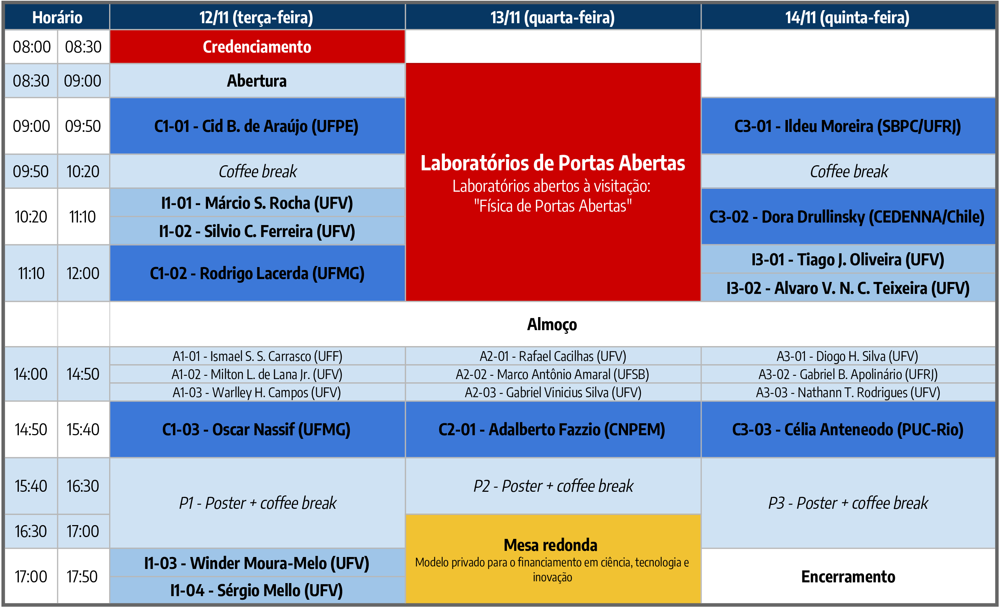

O Programa de Pós-Graduação em Física da UFV realiza nos dias 12, 13 e 14 de novembro de 2019 o II Simpósio da Pós-Graduação em Física - UFV. O objetivo deste simpósio é promover a troca de experiência entre estudantes e reconhecidos pesquisadores do cenário nacional. O evento tem como público alvo estudantes de graduação e de pós-graduação do curso de Física e áreas afins. As atividades propostas para o simpósio incluem palestras por professores convidados, apresentações orais de discentes, sessão de pôsteres, laboratórios de portas abertas e mesa-redonda.
Cronograma

Local do evento
Auditório da Biblioteca Central, na Universidade Federal de Viçosa.
Programação do dia 12 de novembro de 2019 (terça-feira)
Convidados
C1-01 – Lasers Aleatórios e o comportamento vítreo da luz (Cid B. de Araújo)
Cid B. de Araújo, Universidade Federal de Pernambuco (UFPE) | cid@df.ufpe.br
Lasers aleatórios (LAs) – em inglês: Random Lasers - são diferentes dos lasers convencionais porque a realimentação para a obtenção da emissão estimulada e consequentemente da amplificação óptica não é fornecida por espelhos nem grades de difração. Com efeito, a operação dos LAs é possível graças ao espalhamento de luz em micro- ou nano-estruturas desordenadas que atuam como emissores de luz ou dispersos aleatoriamente dentro de um meio luminescente. Devido às características específicas dos LAs, a riqueza dos fenômenos físicos envolvidos na sua operação e sua conformação experimental simples, os LAs atraem atualmente um grande interesse da pesquisa básica, bem como do ponto de vista aplicado.
Nesta palestra vou apresentar as idéias básicas sobre LAs mostrando como vários sistemas altamente desordenados podem ser utilizados para a obtenção de LAs eficientes. Uma variedade de sistemas físicos que permitem a operação de LAs emitindo desde o ultravioleta até o infravermelho será considerada. Os mecanismos explorados para a operação de LAs excitados por absorção de um, dois e três fótons, com base em meios orgânicos e inorgânicos, serão discutidos. Analogias entre os LAs e sistemas complexos estudados pela Física Estatística também serão analisadas. Em particular, vou discutir analogias com os Vidros de Spin e a observação de Transições de Fase Fotônicas caracterizadas através do estudo das flutuações de intensidade dos LAs.
C1-02 – Crescimento de Grafeno e sua interação com ambientes gasosos e líquidos (Rodrigo Gribel Lacerda)
Rodrigo Gribel Lacerda, Universidade Federal de Minas Gerais (UFMG) | rglacerda@gmail.com
Grafeno constitui uma forma de carbono bidimensional. Desde que foi obtido experimentalmente por Novoselov e colaboradores, este material se tornou uma fonte ideal para o estudo do comportamento de elétrons em sistemas de baixas dimensões, como também vêm demonstrando ser bastante promissor como aplicação em dispositivos eletrônicos. Além disso, o grafeno possui uma dispersão eletrônica linear e possui mobilidade elétrica para ambos os portadores que podem chegar a ordens de µ ~ 100.000 cm²/V.s. Essa última característica tornou o grafeno um forte candidato para diversas aplicações na microeletrônica e causará um grande impacto na área de (bio)sensores e dispositivos como telas sensíveis ao toque.
Recentemente, a produção do material grafeno em grandes áreas possibilitou o surgimento de novas configurações de dispositivos capazes de explorar de maneira ainda mais interessante as interações entre grafeno e o ambiente que o cerca. Propriedades mecânicas do grafeno puderam ser mais facilmente investigadas utilizando-o em uma configuração de membrana ressonante, suas propriedades de permeabilidade vêm sendo estudadas a partir da interação da membrana atômica com diferentes atmosferas gasosas e novas possibilidades surgem com o melhor entendimento das propriedades elétricas e mecânicas do grafeno sobre/sob diferentes líquidos. A integração do grafeno com uma arquitetura microfluídica pode ser bastante promissora para o desenvolvimento de aplicações em (bio)sensores.
Neste trabalho serão abordados aspectos gerais relacionados ao crescimento de grafeno e de suas aplicações nas mais diversas áreas. Mais especificamente serão apresentados estudos da interação do grafeno com o gás hidrogênio e sua aplicação como um sensor de gás e também a integração de membranas suspensas de grafeno com canais microfluídicos “enterrados”, criando uma plataforma para o estudo da interação da monocamada de grafeno com meios líquidos [1,2,3]. Será visto como a interface grafeno/água responde mecanicamente à ação de uma força de indentação e qual é a resposta elétrica da membrana suspensa de grafeno em contato com a água.
Agradecimentos: Os autores gostariam de agradecer a Fapemig, INCT de Nanomateriais de Carbono, Cnpq/MCT, Petróbras, BNDS, e Capes pelo suporte.
Referências:
[1] Ferrari, G. A. et al., Apparent Softening of Wet Graphene Membranes on a Microfluidic Platform,ACS NANO 12, 4312 (2018).
[2] Rezende, N. P. et al., Probing the Electronic Properties of Monolayer MoS2 via Interaction with Molecular Hydrogen, Advanced Electronic Materials, 5, 1800591 (2019).
[3] Pereira, C. L. et al.,Reversible doping of graphene field effect transistors by molecular hydrogen: the role of the metal/graphene interface, 2D Materials 6, 025037 (2019).
C1-03 – Espectroscopia de Correlação de Fótons Revisitada: Inovação Tecnológica e Novas Aplicações (Oscar Nassif de Mesquita)
Oscar Nassif de Mesquita, Universidade Federal de Minas Gerais (UFMG) | mesquita@fisica.ufmg.br
Apresentaremos nesta palestra os conceitos básicos envolvendo a técnica de “Correlação de Fótons” ou “Espalhamento Dinâmico de Luz”, baseados na teoria quântica de coerência óptica. O conceito de coerência óptica em primeira ordem e em ordens superiores será discutido. Com esta técnica, através das medidas de “anti-bunching” , houve a prova indiscutível da existência do fóton. Esta técnica passou a ser uma técnica padrão para a medida do coeficiente de difusão translacional e rotacional de partículas em solução e, consequentemente, uma técnica para a determinação do tamanho e forma de partículas em solução. Nos últimos 40 anos várias empresas pelo mundo tem fabricado e vendido estes espectrômetros, sendo a técnica conhecida por DLS (Dynamic Light Scattering). Esta é uma das técnicas mais versáteis para a medida de tamanho de partículas em solução, bastante usada tanto nos meios acadêmicos quanto industriais. Com o boom das aplicações e desenvolvimentos que envolvem nanotecnologia, a técnica de DLS assumiu uma importância ainda maior. Fizemos uma inovação tecnológica para o espectrômetro de DLS, que está em processo de obtenção de patente, que permitiu tanto a redução de seu tamanho quanto de seu custo. Este foi o resultado da nossa associação à empresa iVision sediada no BHTech, com larga experiência na área de “machine vision”. Com este novo conceito de DLS, desenvolvemos uma plataforma portátil de biodiagnósticos para várias doenças, dentro do conceito de tecnologias tipo “point-of-care”, que não exigem laboratórios de análise e nem pessoal especializado. Além do DLS portátil usamos para fazer o biodiagnóstico nanosensores, que consistem de nanobastões de ouro e fazemos uso da ressonância plasmônica entre o laser e os nanobastões, para se obter um forte espalhamento de luz. Com o DLS portátil medimos a difusão rotacional dos nanobastões. Os nanobastões são funcionalizados com o antígeno da doença que se quer detetar. Uma gota de sangue ou soro do paciente é colocada no equipamento e, em caso de doença positiva, haverá a presença de anticorpos que se ligarão aos nanobastões, mudando a difusão rotacional, que será então detetada pelo DLS em poucos minutos. Todo o processo é acionado e controlado por um aplicativo de celular. Apresentaremos nossa plataforma de biodiagnósticos e aplicações em várias doenças tanto em animais quanto em humanos.
Convidados Internos
I1-01 – 10 anos do laboratório de Física Biológica da UFV: da pinça de brinquedo às técnicas ópticas avançadas (Márcio S. Rocha)
Márcio S. Rocha, Universidade Federal de Viçosa (UFV) | marcios.rocha@ufv.br
Neste seminário apresentaremos um pouco da história do Laboratório de Física Biológica do Departamento de Física da UFV. Ilustraremos as diversas fases vividas durante o processo de implantação de um novo laboratório, desde os primeiros experimentos com videomicroscopia e uma pinça óptica de brinquedo, até as técnicas avançadas recentemente implantadas: a pinça óptica holográfica para estudos de novos materiais e o método de force-feedback para estudos da cinética das interações DNA-ligantes a nível de molécula única.
I1-02 – Três décadas de estudo de sistemas complexos na UFV (Silvio Ferreira)
Silvio Ferreira, Universidade Federal de Viçosa (UFV) | silvioferreirajr@gmail.com
Neste seminário farei uma brevíssima apresentação cronológica sobre o desenvolvimento da área de complexidade no Departamento de Física da UFV iniciada há quase três décadas com a chegada do Prof. Marcelo Lobato Martins. Também comentarei o estado atual da área, seus impactos para a pós-graduação na UFV e os grupos de pesquisa que emergiram a partir dela.
I1-03 – A survey on magnetism and ‘new materials’: a bit of what has been done at UFV (Winder Moura-Melo)
Winder Moura-Melo, Universidade Federal de Viçosa (UFV) | wamoura.melo@gmail.com
I intend to briefly review a number of works we have done in the last years, namely, those concerned with nanomagnetism, frustrated magnets and topological insulators. The importance of our experimental-theoretical collaboration will be emphasized, and how such a merging has been profitable, specially for Students. I conclude by pointing out some perspectives for the near future.
I1-04 – Silicon nanostructures formation induced by ion bombardment (Sergio Mello)
Sergio Mello, Universidade Federal de Viçosa (UFV) | smello@ufv.br
Nanostructures patterns affect surface properties depending on size, shape, and spatial distribution of individual structures. For example, the spectral response of a thin-film silicon solar cell can be adjusted by surface patterning.[1] Another example is the increase in intensity of the Raman signal using nanostructured metallic layers on solid substrates (this technique is known as surface-enhanced Raman spectroscopy). A low-cost and efficient route to patterning a surface is to subject it to ion bombardment.[2,3] In this talk I describe the experimental apparatus for that purpose and present our experimental results on the evolution of nanostructures patterns. Briefly, we reveal early stages of ordering of self-organized Si nanostructures created by ion bombardment of a metal-coated Si substrate. Moreover, we show that the kind of ordering changes at least twice as the surface topography evolves under progressive ion beam erosion, culminating in a pattern of nanodots and nanoholes.
References:
[1] S. Yu et al., Sci. Rep. 7 (2017) 1.
[2] B. Ziberi et al., J. Phys. Condens. Matter. 21 (2009) 224003.
A1-01 – Relações de escala na simulação da dissolução de calcita (Ismael Carrasco)
Ismael Carrasco, Universidade Federal Fluminense (UFF) | theismiu@gmail.com
Autores: I. S. S. Carrasco - Universidade Federal Fluminense (UFF), F. D. A. Aarão Reis - Universidade Federal Fluminense (UFF)
A compreensão da interação rocha-água é importante na descrição do intemperismo de rochas e evolução dos solos, tendo importante aplicação na prospecção de jazidas minerais ou petrolíferas. No entanto, medidas precisas das taxas de dissolução de minerais são normalmente difíceis de se obter. Efeitos de transporte dos reagentes e produtos dificultam o acesso a essas taxas. Isso motivou diversos pesquisadores a procurar por noções intuitivas em simulações numéricas. Contudo, a capacidade dos computadores atuais restringe as simulações a amostras que são ordens de grandeza menores que grãos interessantes para aplicações. Neste trabalho tentamos contornar essa limitação através de análises de escala. Utilizamos o método de Monte Carlo cinético para simular dissoluções termicamente ativadas de grãos com diferentes tamanhos L. Nessa modelagem as partículas do grão são removidas com taxa \nu \epsilon^n, onde n representa o número de ligações, \nu a frequência efetiva de vibração da água, \epsilon=e^{-E_b/kT} com E_b representando a energia de cada ligação e kT a energia térmica. Os parâmetros \nu e \epsilon foram fixados através de uma calibração que envolveu a comparação da velocidade de propagação dos degraus nas simulações com velocidades experimentais da literatura. Analisando os resultados para diferentes tamanhos, conseguimos obter relações de escala que colapsam a taxa de dissolução para diferentes tamanhos de sistema. Além disso, conseguimos identificar a existência de um crossover no regime de dissolução. Para L\epsilon\ll 1, temos uma dissolução dominada pelo arredondamento dos grãos. Já para L\epsilon\gg 1, temos uma dissolução dominada pela retração de degraus nas faces. Realizando uma análise de escala nas taxas obtidas para L\epsilon\gg1, conseguimos extrapolar para a temperatura ambiente, onde a taxa obtida concorda muito bem dados experimentais. Esse trabalho foi realizado com apoio financeiro da FAPERJ.
A1-02 – Nanocompósito de polímero aquoso semicondutor e pontos quânticos coloidais de CdTe: produção e caracterização (Milton Lopes)
Milton Lopes, Universidade Federal de Viçosa (UFV) | miltonsf@gmail.com
Autores: Milton Lopes de Lana Junior - Universidade Federal de Viçosa (UFV), Thamiris Ranquine Cardoso - Universidade Federal de Juiz de Fora (UFJF), Paula D. C. Souza - Universidade Federal de Minas Gerais (UFMG) , Virgílio de Carvalho dos Anjos - Universidade Federal de Juiz de Fora (UFJF), Maria José V. Bell - Universidade Federal de Juiz de Fora (UFJF), Luiz Alberto Cury - Universidade Federal de Minas Gerais (UFMG), Andreza Germana da Silva Subtil - Universidade Federal de Viçosa (UFV), Mariana P. Brandão - Universidade Federal de Viçosa (UFV)
Estudos visando a compreensão de processos de transferência de energia em nanocompósitos produzidos pela associação de pontos quânticos (PQs) e polímero utilizam, em geral, os nanocristais como doadores de energia e as moléculas do polímero como aceitadoras. A produção de nanocompósitos nos quais um polímero solúvel em água é a espécie doadora de energia e os pontos quânticos é a espécie aceitadora é particularmente difícil devido à baixa eficiência quântica de fluorescência e curtos tempos de vida do estado excitado dessas moléculas quando comparadas aos PQs. Neste trabalho sintetizou-se e associou-se pontos quânticos coloidais de telureto de cádmio (CdTe), estabilizados com ácido tioglicólico (TGA), com o polímero semicondutor luminescente aquoso Poly {[2,5-bis (2- (N, N-dietilamino) etoxi) -1,4-fenileno] -alt-1,4-fenileno} (PPP-DBE) para a produção de nanocompósitos que favorecessem os polímeros como doadores e os PQs como aceitadores. As amostras produzidas foram caracterizadas por UV-VIS, fluorescência no estado estacionária e fluorescência resolvida no tempo. Os resultados obtidos mostraram, para um conjunto específico de amostras, a intensificação da emissão e da eficiência quântica de fluorescência dos PQs no nanocompósito e a diminuição do tempo de vida de fluorescência do polímero. Portanto, verificou-se a ocorrência de transferência de energia do polímero para os pontos quânticos, especialmente para amostras cuja a relação de monômeros de PPP-DBE por número de PQs em solução é de aproximadamente 465, alcançando um aumento de 11,34% na eficiência quântica de fluorescência dos nanocristais de CdTe.
A1-03 – Optically induced micro-oscillations in optical tweezers: a new application for semi-conductor materials (Warlley H. Campos)
Warlley H. Campos, Universidade Federal de Viçosa (UFV) | warlleyns@gmail.com
Autores: Warlley H. Campos - Universidade Federal de Viçosa (UFV) - Johannes Gutenberg Universität Mainz (JGU), Tiago A. Moura - Universidade Federal de Viçosa (UFV), Otávio J. B. J. Marques - Universidade Federal de Pernambuco (UFPE), Jakson M. Fonseca - Universidade Federal de Viçosa (UFV), Joaquim B. S. Mendes - Universidade Federal de Viçosa (UFV), Márcio S. Rocha - Universidade Federal de Viçosa (UFV), Winder A. Moura-Melo - Universidade Federal de Viçosa (UFV)
Optical tweezers (OT) is a powerful tool used to trap and manipulate microscopic objects by using light. Nowadays, it has applications in several areas, such as biological and soft matter physics. The trapping of dielectric beads in OT is a well-known phenomena, being adopted in most experimental setups. In turn, metallic beads are usually not trapped in OT, except under very special conditions. From an electric conducting point of view, topological insulator and semiconductor materials interpolate between dielectrics and metals. Despite the increasing interest of the scientific community in these materials, their possible applications as microparticles in OT have not been investigated so far. In this work, we perform the first experimental studies upon the optical trapping of Bi2Te3, Bi2Se3 and Germanium (Ge) microparticles under a Gaussian laser beam OT. For such materials gradient and radiometric forces compete, generating oscillatory dynamics perpendicular to the optical axis. We describe the oscillations with an effective model that captures the main forces acting on the particle. We investigate the amplitude and periodicity of oscillations, as well as their dependence on particle size. Ge beads oscillate in a preferential direction determined by the polarization of the laser beam. Our results open an avenue for dynamical measurements with unprecedented simplicity and purely optical control. Among the possible applications, stand out the optical rheology of soft matter interfaces and biological membranes, as well as dynamical force measurements in macromolecules and biopolymers.
Apresentações em pôster
P1-01 – Propriedades Morfológicas e Eletroanalíticas de Filmes Finos de Bismuto Eletrodepositados (Victória)
Victória, Universidade Federal de Viçosa (UFV) | victoria.ramos@ufv.br
Autores: Victória Ramos de Oliveira - Universidade Federal de Viçosa (UFV), Renê Chagas da Silva - Universidade Federal de Viçosa (UFV)
O desenvolvimento de sensores eletroquímicos é uma área de bastante interesse da comunidade científica, uma vez que esses sensores são de fácil construção e de baixo custo e as análises demandam pouco tempo. O eletrodo com filme de bismuto (Bi) surgiu como alternativa para substituir os eletrodos de mercúrio (Hg), utilizado como sensor de traços de metais pesados em amostras diversas. Além de apresentar as mesmas propriedades eletroquímicas do mercúrio, o bismuto é sólido a temperatura ambiente e não apresenta toxicidade. O objetivo deste trabalho foi a obtenção de filmes finos de bismuto via síntese eletroquímica e a descrição das propriedades morfológicas e eletroanalíticas do material. Os filmes finos de bismuto foram obtidos através de eletrodeposição potenciostatica em substratos metálicos de cobre, em diferentes potenciais e tempos de deposição. As características morfológicas, como porosidade e tamanho de grãos, foram estudadas por de imagens da superfície dos filmes, via microscopia eletrônica de varredura (MEV). Os resultados mostram que filmes depositados com potenciais mais negativos e por tempos maiores apresentam maior porosidade com a presença de ramificações nos grãos, além de serem mais espessos e com uma distribuição de tamanho relativamente heterogênea. Para verificar as propriedades eletroanalíticas, foi utilizada a técnica de voltametria de redissolução anódica (VRA) por onda quadrada em eletrólitos contendo traços do metal pesado cádmio (Cd) diluídos em solução de acetato de sódio. Inicialmente, foi feita uma otimização dos parâmetros de VRA, através do ajuste da amplitude, frequência e do tempo de pré-concentração. Os testes foram feitos nos diferentes depósitos e os resultados mostraram que filmes depositados com potencial de -0.8 V e tempo de 90 s, apresentam maior estabilidade e sensibilidade nas medidas e um limite de detecção de 12,5 \mug/L. Esses resultados ilustram a dependência do sinal eletroanalítico com a morfologia dos depósitos.
P1-02 – Formação de micelas em misturas de surfactantes iônicos e não-iônicos (Juliano Fernandes Teixeira)
Juliano Fernandes Teixeira, Universidade Federal de Viçosa (UFV) | juliano.teixeira@ufv.br
Autores: Juliano Fernandes Teixeira - Universidade Federal de Viçosa (UFV), Alvaro Vianna Novaes de Carvalho Teixeira - Universidade Federal de Viçosa (UFV)
Na agricultura, na medicina e no cotidiano como detergentes, os surfactantes são amplamente utilizados. Por possuírem em sua estrutura uma região hidrofílica e uma hidrofóbica, eles apresentam características importantes como a diminuição da tensão interfacial, como emulsificantes, etc. Uma característica marcante dos surfactantes é a sua capacidade de formação de estruturas conhecidas como micelas. As micelas são formadas por um conjunto de moléculas do surfactante envolvido, que, no equilíbrio termodinâmico, se auto-organizam em estruturas compactas. Essa formação acontece a partir de uma certa concentração conhecida como concentração micelar crítica (CMC), um dos principais parâmetros para caracterizar os surfactantes. Caracterizamos a CMC do surfactante aniônico dodecil sulfato de sódio (SDS) e do surfactante não-iônico polietilenoglicol dodecil éter (Brij L4), realizando medidas de soluções contendo os surfactantes, tanto isolados quanto combinados. Utilizamos da técnica espalhamento dinâmico de luz (DLS), o que possibilitou encontrar a CMC do Brij . Medidas de condutividade elétrica da solução foram realizadas por um condutivímetro digital em conjunto com uma bomba de seringa. Utilizando um Tensiômetro de anel Du Noüy aplicando o método da placa Wilhelmy, medimos a tensão interfacial variando a concentração de surfactante. Foi possível encontrar por diferentes técnicas a CMC das soluções. Notamos pela técnica de condutivimetria que a CMC de soluções mistas não se trata unicamente de formação de micelas, mas sim da concentração a partir da qual em que as micelas mistas conseguem capturar os contra-íons livres na solução. Em soluções mistas o valor da CMC encontrada são maiores que a CMC do surfactante não iônico (Brij) e menores que a CMC do iônico (SDS), estando de acordo com a teoria (RST) de Rubingh que nos mostra ser uma interação sinergética. Estudos preliminares de medidas de tensão interfacial parecem corroborar com os resultados obtidos anteriormente.
P1-03 – Estudo da interação de SDS com cossolventes e compostos de inclusão (Kairon)
Kairon, Universidade Federal de Viçosa (UFV) | kairon.oliveira@ufv.br
Autores: Kairon Márcio de Oliveira - Universidade Federal de Viçosa (UFV), Alvaro Vianna Novaes de Carvalho Teixeira - Universidade Federal de Viçosa (UFV)
Surfactantes são moléculas anfifílicas e, logo, possuem, em sua estrutura, uma parte hidrofílica e outra hidrofóbica. Por causa dessa estrutura, após uma certa concentração, chamada de concentração micelar crítica (ou CMC), em solução ocorre a formação de micelas. O SDS é um surfactante aniônico vastamente estudado em literatura, cujas propriedades são bastante conhecidas. Sabe-se que, em soluções aquosas, a formação de micelas ocorre a partir de 8,3 mmol/L. Nesse estudo, analisamos as mudanças no valor da CMC, quando adicionamos acetonitrila (cossolvente) e quando adicionamos compostos de inclusão: a \beta-ciclodextrina e a 2-hidroxipropil-\beta-cilodextrina. Foi notado, através de medidas de condutivimetria elétrica, o aumento da CMC da amostra com o aumento da fração de cossolvente. Isso ocorre devido ao aumento das interações eletrostáticas do íon de SDS nas micelas e, usando medidas de espalhamento dinâmico de luz, obtivemos o raio hidrodinâmico das micelas em função da fração de acetonitrila em solução, corroborando a explicação anterior. As medidas de condutivimetria utilizando os compostos de inclusão mostraram que a estequiometria desse sistema é 1.2 moléculas de ciclodextrina para cada moléculas de SDS. Logo 80% das moléculas de SDS estão sendo englobadas por uma moléculas de \beta-ciclodextrina e 20% das moléculas de SDS estão sendo englobadas por duas moléculas de \beta-ciclodextrina. Notamos também um aumento na CMC do sistema, devido à quebra de micelas com a adição das moléculas de ciclodextrina.
P1-04 – Atomic and Molecular Auger Decay in CHCl3 (Débora Vasconcelos)
Débora Vasconcelos, Universidade Federal do Rio de Janeiro (UFRJ) | deboranb@if.ufrj.br
Autores: D.N. Vasconcelos - Universidade Federal do Rio de Janeiro (UFRJ), A.C.F. Santos - Universidade Federal do Rio de Janeiro (UFRJ), V. Morcelle - Universidade Federal Rural do Rio de Janeiro (UFRRJ), M.A. MacDonald - Canadian Light Source, M. M. Sant’Anna - Universidade Federal do Rio de Janeiro (UFRJ), B. N. C. Tenório - Universidade Federal do Rio de Janeiro (UFRJ), A. B. Rocha - Universidade Federal do Rio de Janeiro (UFRJ), V. B Bonfin - Universidade Federal do Rio de Janeiro (UFRJ), N. Appathurai - Canadian Light Source, L. Zuin - Canadian Light Source
The Auger electron spectra after the chlorine 2p excitation[1] and ionization in the gas phase CHCl3 molecule were investigated both theoretically and experimentally. Experimentally, in this study the molecule was photoionized by soft X-rays from the monochromatic synchrotron radiation in a beamline of the variable line space plane, grating monochromator (VLS-PGM) energy range from 5.5 eV to 250 eV, of the Canadian Light Source Inc. synchrotron radiation laboratory (Saskatoon, Canada).The molecular and atomic auger transitions are examined and assigned. The atomic decay regime is expressed by sharp features in energy, suggesting welldefined initial and final states[2]. The photoexcited or photoionized molecule give rise to the transition of an electron with a vacancy in a core electron shell is strongly unstable and short-lived. The molecular decay regime, on the other hand, are represented as broad and structureless peaks and the widths of the broad structures reflect the slope of the dissociative molecular potential.
P1-05 – Rumor propagation meets skepticism: A parallel with zombies (Marco Antonio)
Marco Antonio, Universidade Federal do Sul da Bahia (UFSB) | marcoantonio.amaral@gmail.com
Autores: Marco Antonio Amaral - Universidade Federal do Sul da Bahia (UFSB), Jeferson J. Arenzon - Universidade Federal do Rio Grande do Sul (UFRGS)
We propose a model of rumor spreading in which susceptible, but skeptically oriented individuals may oppose the rumor. Resistance may be implemented either by skeptical activists trying to convince spreaders to stop their activity, becoming stiflers or, passively (non-reactive) as a consequence, for example, of fact-checking. Interestingly, these two mechanisms, when combined, are similar to the (assumed) spreading of a fictitious zombie outbreak, where survivors actively target infected people. We analyse the well-mixed (mean-field) description and obtain the conditions for rumors (zombies) to spread through the whole population. The results show that when the skepticism is strong enough, the model predicts the coexistence of two fixed points (such bistability may be related to polarized situations), with the fate of rumors depending on the initial exposure to it.
P1-06 – O papel de sítios periféricos no modelo SIS (José Carlos)
José Carlos, Universidade Federal de Viçosa (UFV) | jcmschott@gmail.com
Autores: José Carlos de Moraes Silva - Universidade Federal de Viçosa (UFV), Silvio C. Ferreira - Universidade Federal de Viçosa (UFV)
No que se refere ao estudo de processos dinâmicos em redes complexas, destaca-se a pesquisa envolvendo modelos epidêmicos, com ênfase para o modelo suscetível-infectado-suscetível (SIS). Muitos artigos científicos tem se ocupado em estudar o papel de sítios altamente conectados e sítios altamente centrais na dinâmica do modelo. Trabalhos de pesquisa incluem estudos sistemáticos sobre os principais mecanismos de ativação da fase endêmica. Estes incluem, até o presente, a interação envolvendo hubs na manutenção do estado endêmico, para redes com distribuição de graus em lei de potência P(k) \sim k^{-\gamma} , com \gamma > 2.5; e a ativação promovida pelos sítios mais centrais, como investigado por meio da decomposição k-core em redes, predominante em redes com \gamma < 2.5. Se por um lado há um enorme número de pesquisas voltadas para o papel de sítios altamente centrais no estabelecimento da epidemia, constata-se uma desproporcional falta de estudos sistemáticos no esforço de discriminar os efeitos de sítios periféricos na dinâmica do modelo SIS, seja na sua ação sobre o tempo de vida da atividade nos hubs ou na criação de atalhos, ligando sítios altamente centrais, ou caminhos ligando diferentes partes da rede.
Neste trabalho, investigamos os efeitos de sítios de grau k = 1 e k = 2 no modelo epidêmico SIS, usando diferentes tipos de mecanismos de ligação destes sítios ao núcleo da rede, como a ligação aleatória, na qual um sítio do núcleo é escolhido ao acaso, a ligação preferencial linear, na qual um sítio é escolhido aleatoriamente e aceito com uma probabilidade proporcional ao seu grau e a ligação super-linear, na qual um sítio é escolhido aleatoriamente e aceito com uma probabilidade proporcional ao quadrado de seu grau.
P1-07 – Microrreologia ativa e passiva aplicada a soluções de polímeros semiflexíveis (Leonam Duarte)
Leonam Duarte, Universidade Federal de Viçosa (UFV) | leonam.duarte@ufv.br
Autores: Leonam Kavyn Rocha Duarte - Universidade Federal de Viçosa (UFV), Leandro Gutierrez Rizzi - Universidade Federal de Viçosa (UFV)
Física da matéria mole é uma importante área de estudo para diversos campos industriais como a alimentícia e a farmacêutica. Um dos seus principais objetivos consiste na determinação de propriedades mecânicas de materiais viscoelásticos. Ainda que modelos de polímeros simples, como os de Rouse e Zimm, tenham trazido elucidações importantes acerca da dinâmica dessas cadeias, previsões sobre as características mecânicas de soluções poliméricas de cadeias semiflexíveis permanece um grande desafio. Neste trabalho, utilizamos uma abordagem numérica fundamentada no teorema flutuação-dissipação com o objetivo de se obter propriedades dinâmicas de cadeias semiflexíveis. Fomos capazes de mostrar que tal abordagem leva aos mesmos resultados que aqueles obtidos quando usamos o tratamento usual da dinâmica Browniana. É importante dizer que o método ativo possui a vantagem de ser várias ordens de grandeza mais eficiente que o passivo, além de fornecer dados computacionais isentos de ruídos que podem dificultar sua análise. Isso permitiu que fossem realizadas simulações em escalas de tempo e comprimento bastante variados e que artifícios como ajustes de curvas, por exemplo, fossem desnecessários para se conseguir os resultados finais. Com isso, aplicamos métodos baseados na microrreologia para relacionar a dinâmica das cadeias poliméricas às respostas mecânicas da solução. Assim, fomos capazes de mensurar numericamente o módulo de cisalhamento complexo e a viscosidade complexa da solução polimérica para cadeias com diversos graus de semiflexibilidade, na ausência ou presença de interação de volume excluído. Por fim, validamos nossos resultados comparando-os aos experimentais obtidos para o bacteriófago filamentoso fd.
P1-08 – Rico ou Pobre: Quem deveria pagar impostos mais altos? (Iago Barros)
Iago Barros, Universidade Federal de Viçosa (UFV) | iagobarros42@gmail.com
Autores: Iago Nascimento Barros - Universidade Federal de Viçosa (UFV), Marcelo Lobato Martins - Universidade Federal de Viçosa (UFV), Paulo Murilo Castro de Oliveira - Universidade Federal Fluminense (UFF)
O dinheiro é o principal meio de troca da sociedade atual. Muitos itens já foram utilizados para essa função, desde metais e conchas raras até coisas totalmente artificias como cédulas bancárias. Hoje, apesar do dinheiro ter se tornado essencialmente um símbolo (uma abstração), sua posse é vital para melhores condições de vida e oportunidades. Enquanto existem pessoas mais ricas que países inteiros, existem também inúmeras pessoas que vivem na miséria profunda. Durante o século XXI, a desigualdade vem retomando índices astronômicos, valores não atingidos desde a crise de 1929. Com isso, a discussão a respeito da distribuição de renda, impostos e as ações governamentais de bem-estar social retornaram aos holofotes. Tratando-se de um problema complexo, cientistas de diversas áreas como, por exemplo, físicos, investigaram a economia. No presente trabalho é dada atenção ao modelo econômico proposto por Castro de Oliveira (2017). Em seu trabalho, Castro de Oliveira (2017) propôs um processo multiplicativo de evolução econômica onde cada agente deve pagar anualmente impostos e receber uma restituição do governo. Nas situações em que os mais pobres pagavam maiores impostos que os mais ricos o sistema colapsava atingindo um estado absorvente, indicando que a progressividade nos impostos é um fator fundamental para a dinâmica da economia. Em nosso trabalho estudamos diferentes opções de redistribuição de dinheiro pelo governo, propostas que se mostraram bem sucedidas no combate à desigualdade. Nossa conclusão é que, enquanto a progressividade nos impostos é importante para impedir a evolução para um sistema absorvente, a forma da redistribuição de dinheiro pelo governo também é fundamental para se alcançar uma sociedade mais igualitária.
P1-09 – Time-series analysis of sea surface temperature and El Niño-Southern Oscillation (ENSO) dynamics (Juliane Moraes)
Juliane Moraes, Universidade Federal de Viçosa (UFV) | juliane.moraes@ufv.br
Autores: Juliane Teixeira de Moraes - Universidade Federal de Viçosa (UFV) , Genes Raone Dias - Universidade Federal de Juiz de Fora (UFJF), José Antonio de Sales - IF Sudeste MG Juiz de Fora
Nowadays it is known that El Niño is one of the three phases of the El Niño Southern Oscillation (ENSO) phenomenon caused by the interannual sea surface temperature variations of the tropical Pacific. The ENSO alternate between the stages: El Niño state - when the sea surface temperature of the Equatorial Pacific Ocean increases significantly, La Nina state that is the opposite behavior, and the neutral state. Although this process happens in a particular place, its consequences like winds, droughts, and floods are noticed throughout the globe. The sea surface temperature changes are caused by the surface wind fluctuations shown a strong interaction between ocean and atmosphere. In this work, we have tried to understand the predictability of the ENSO using a specific variable: the sea surface temperature (SST). All data used were taken from National Oceanic and Atmospheric Administration (NOAA), and the gaps and small failures on that time series were handled by Holt-Winters forecasting method. To understand the behavior of these time-series, we have made the reconstruction of the phase space by the Takens’s time-delay method and using the Grassberger-Procaccia algorithm we calculate the dimension of correlation for some embedding dimensions of the system. Our sample dataset capture locally, with good correlation, the regional Oceanic Niño Index (ONI) and show the behavior anomalous pictured by ONI, a measure of ENSO known to detect El Niño / La Niña. Our results show the existence of attractors in the dynamic described by these time-series embedded on high dimensions. The Largest Lyapunov Exponent and the Kolmogorov-Sinai entropy shown evidence on the sensitivity to initial conditions and the possibility of transitions to chaos.
P1-10 – Propriedades dinâmicas de um modelo bouncer em campo não homogêneo (Felipe Augusto)
Felipe Augusto, Universidade Federal de São João del Rei (UFSJ) | felipe.titor@gmail.com
Autores: Felipe Augusto Oliveira Silveira - Universidade Federal de São João del-Rei (UFSJ), Denis Gouvêa Ladeira - Universidade Federal de São João del-Rei (UFSJ)
O modelo Bouncer consiste em uma partícula clássica, sujeita à aceleração da gravidade, que colide com uma parede que se comporta como pistão, oscilando com o tempo. Esse modelo foi proposto como um sistema alternativo para estudar a aceleração de Fermi. Fenômeno que consiste no ganho ilimitado de energia da partícula devido as colisões com a parede móvel. Neste trabalho estudamos um sistema dinâmico que também pertence à classe de problemas dos bilhares. O modelo consiste em uma esfera carregada negativamente com uma cavidade que vai de um hemisfério a outro, passando pelo seu centro, e uma partícula de carga oposta forçada a mover no seu interior. Ainda dentro da esfera, há uma parede que oscila como um pistão, vibrando com uma frequência pré determinada. Após a colisão com a parede a partícula pode perder ou ganhar energia. O mapa do sistema foi construído utilizando a velocidade da partícula após a colisão em função da fase da parede. Para certas combinações de valores de parâmetros a dinâmica apresenta comportamento caótico. Essa não linearidade observada no sistema foi analisada através do expoente de Lyapunov. Os pontos fixos e suas estabilidades também em foram encontrados numericamente para valores diferentes de parâmetro. Finalmente, a região caótica foi caracterizada utilizando análise de escala. Assim como já foi mostrado para o modelo Bouncer e o Fermi-Ulam, mostramos que a energia média e a rugosidade (variância da velocidade média) obedecem funções de escala. A descrição de escala foi encontrada para as regiões caóticas abaixo da primeira curva invariante.
P1-11 – Estudo das propriedades eletrônicas do grafeno utilizando o modelo de Tight-Binding (Jacqueline T Santos)
Jacqueline T Santos, Universidade Estadual do Sudoeste da Bahia (UESB) | jackcaribi@hotmail.com
Autores: Jacqueline Teixeira Santos - Universidade Estadual do Sudoeste da Bahia (UESB), Sandra Cristina Ramos - Universidade Estadual do Sudoeste da Bahia (UESB)
O trabalho consiste em estudar analiticamente as propriedades eletrônicas do grafeno utilizando um formalismo através da solução da equação de Schrodinger independente do tempo. Considerando uma rede arbitrária com n elementos, influenciado por um potencial. Esse potencial é forte e periódico o que permitiu utilizar o teorema de Bloch para investigar os auto estados dessa rede. A partir desse formalismo, obtivemos os valores característicos de energia em função do número de ondas(k), conhecido como vetor de onda na Física do Estado Sólido. Nós cofinamos os vetores primitivos da rede no espaço recíproco, na Zona Primeiro Brillouin. Assim, desenvolvemos um formalismo que depende exclusivamente de vetores primitivos e da direção das interações elétricas na rede, uma vez que esse formalismo não se preocupa com o tipo potencial, mas apenas o considera forte o suficiente para influenciar os elementos da rede. Aplicando-o a estrutura do grafeno foi observado em sua superfície eletrônica um gap maior entre a banda de condução e banda de valência do que outras pesquisas. Além disso, obtivemos os seis pontos Dirac que formam a região dos cones de Dirac, onde são explicadas as propriedades semicondutoras do grafeno.
P1-12 – O Método dos Sapos: Um Algoritmo Bioinspirado Para Extração de Dados da Dinâmica de Spin de Skyrmions (Isaac Santece)
Isaac Santece, Universidade Federal de Juiz de Fora (UFJF) | isantece@gmail.com
Autores: J. P. A. Mendonça - Universidade Federal de Juiz de Fora (UFJF), I. A. Santece - Universidade Federal de Juiz de Fora (UFJF), M. G. Monteiro Jr. - Universidade Federal de Juiz de Fora (UFJF), S. A. Leonel - Universidade Federal de Juiz de Fora (UFJF), P. Z. Coura - Universidade Federal de Juiz de Fora (UFJF), F. Sato - Universidade Federal de Juiz de Fora (UFJF)
Skyrmions são estruturas topológicas relevantes que possuem uma ampla gama de aplicações em diferentes campos. No contexto particular do nanomagnetismo, eles se tornaram importantes candidatos a novos dispositivos de memória magnética e aparelhos biomédicos, devido ao seu tamanho e a alta sensibilidade a perturbações dinâmicas, isto é, podem ser transportados experimentalmente sob diferentes condições. No nanomagnetismo, uma das ferramentas mais importantes da análise teórica são as simulações da dinâmica de spin, que descrevem a evolução temporal de domínios magnéticos. A introdução de descontinuidades nesses sistemas modifica a paisagem topológica e requer tratamento adequado para representar adequadamente os domínios magnéticos. Os resultados de uma simulação de dinâmica de spin, são dados como um conjunto de momentos magnéticos ordenados em etapas de tempo. A partir desses dados são adquiridas as informações relevantes, como trajetória da quasipartícula e a magnetização média. Isso geralmente é feito plotando diretamente os momentos magnéticos de maneira espacial e obtendo uma impressão visual. Mais uma vez, a introdução de saltos discretos e também cargas topológicas de fronteira devido a campos de desmagnetização limita um pouco essa análise, diminuindo a precisão da obtenção das posições reais do Skyrmion, além da dificuldade em identificar outros fenômenos importantes, como a variação do tamanho do Skyrmion durante a dinâmica. Neste trabalho, apresentamos um novo método bioinspirado (baseado no método PSO- Particle Swarm Optimization) que pode encontrar, com alta precisão a posição do Skyrmion em uma nonofita. Devido à dificuldade de obter essas informações em sistemas discretos e também em sistemas com limites finitos, apresentamos um método capaz de rastrear de maneira confiável uma ampla variedade de estruturas topológicas diferentes, além de fornecer dados adicionais sobre os parâmetros dos skyrmions, em casos estacionários e dinâmicos.
P1-13 – Transistor Spintrônico por efeito de campo com canal de grafeno (Hamilton)
Hamilton, Universidade Federal de Viçosa (UFV) | hamiltonfisica82@gmail.com
Autores: H. A. Teixeira - International Iberian Nanotechnology Laboratory (INL) - Laboratório de Spintrônica e Nanomagnetismo (LabSpin) - Universidade Federal de Viçosa (UFV), C. I. L. de Araujo - International Iberian Nanotechnology Laboratory (INL) - Laboratório de Spintrônica e Nanomagnetismo (LabSpin) - Universidade Federal de Viçosa (UFV), O. O. Toro - International Iberian Nanotechnology Laboratory (INL) - Laboratório de Spintrônica e Nanomagnetismo (LabSpin) - Universidade Federal de Viçosa (UFV), C. Liao - International Iberian Nanotechnology Laboratory (INL), J. Borme - International Iberian Nanotechnology Laboratory (INL), P. Alpuim - International Iberian Nanotechnology Laboratory (INL), P. P. Freitas - International Iberian Nanotechnology Laboratory (INL), A. A. Pasa - International Iberian Nanotechnology Laboratory (INL) - Laboratório de Filmes Finos e Superfícies (LFFS) - Universidade Federal de Santa Catarina (UFSC)
Os avanços tecnológicos em processadores exigem cada vez mais otimização da relação tamanho desempenho dos transistores e explorar o momento magnético intrínseco dos elétrons, o spin, é uma alternativa as atuais tecnologias. A construção de dispositivos baseados em spins foi iniciada com a descoberta da magnetorresistência gigante (MRG) que abriu as portas para a spintrônica, com possibilidade de produzir e utilizar correntes de spins puras e de elétrons polarizados para gerar e transportar informações. Em 1990 Datta e Das propuseram o transistor baseado em correntes de spins (Spin FET), onde a polarização dos spins é controlada por interação spin-orbita, através de um campo elétrico externo. No spin FET dois terminais compostos por materiais ferromagnéticos (Fonte e Dreno) injetam e leem as correntes de spins polarizadas. O Canal que conecta a fonte ao dreno deve ser de material que conserva a orientação de spin. O terceiro terminal chamado de Gate permite controlar a orientação dos spins, impondo-lhes orientação paralela ou antiparalela à do dreno. Desde a proposta do spin-Fet a corrida experimental para sua construção foi iniciada. Neste trabalho apresentamos a construção e caracterização de um Spin-Fet. Os contatos ferromagnéticos são de permalloy e o canal de grafeno. Litografia ótica foi a técnica utilizada para definir os terminais. As caracterizações em andamento mostram sucesso na injeção de spins polarizados no canal. As medidas de magnetorresistência local e não local foram obtidas variando a temperatura entre 15K e 300K. A 15K os resultados mostram MRG similares nas duas temperaturas. Já em 300K os valores da MRG locais são menores devido a interação com os fônos do canal. Obtivemos também a primeira evidência de controle da corrente de spins em canais de grafeno. O valor de 6um obtido para o comprimento de difusão do grafeno vai de encontro aos melhores resultados encontrados na literatura.
P1-14 – Potencial Efetivo e Condições para Supercondutividade Topológica e Supercondutividade Induzida (Allison W. Teixeira)
Allison W. Teixeira, Universidade Federal de Viçosa (UFV) | allwtx@gmail.com
Autores: A. W. Teixeira - Universidade Federal de Viçosa (UFV), V. L. Carvalho-Santo - Universidade Federal de Viçosa (UFV), J. M. Fonseca - Universidade Federal de Viçosa (UFV)
Férmions de Majorana são partículas que são suas próprias antipartículas. Apesar de não terem sido encontradas livres na natureza como partículas fundamentais, podem emergir como excitações coletivas em alguns sistemas de matéria condensada conhecidos como supercondutores topológicos. Sua emergência auxilia no desenvolvimento de vários sistemas, principalmente nos que envolvem computação quântica avançada. Nesse trabalho, usando técnicas de integral funcional na representação do tempo complexo, calculamos o potencial efetivo para férmions de Majorana na conhecida cadeia de Kitaev. Para esse caso, mostramos como o parâmetro supercondutor se comporta em função da temperatura. Também obtemos o número de partículas, mostrando a coexistência de elétrons e buracos na fase topológica do sistema. Além disso, usando a Hamiltoniana para supercondutividade induzida em uma superfície de um isolante topológico, calculamos o potencial efetivo para férmions de Majorana emergentes nesse sistema. Para supercondutividade de onda s induzida, obtemos uma equação de gap equivalente à obtida para sistemas eletrônicos de Dirac quasi-bi-dimensionais, modelo candidato à explicar supercondutividade de alta temperatura crítica. Finalmente, para supercondutividade de onda p, obtemos um valor crítico para a interação elétron-elétron, determinando a existência ou não de supercondutividade induzida na superfície do isolante topológico, em acordo com dados experimentais.
P1-15 – Using Raman spectroscopy for identification of three microalgae species (John Ricardo)
John Ricardo, Universidade de Brasília (UnB) | johnf1030@hotmail.com
Autores: John Ricardo - Universidade de Brasília (UnB), Lucas Alves - Universidade de Brasília (UnB), Sebastião W. da Silva - Universidade de Brasília (UnB), Luiz Roncaratti - Universidade de Brasília (UnB)
Microalgae are photosynthetic organisms rich in lipids, proteins and pigments [1]. These biomolecules are important to the cosmetic, food, pharmaceutical, etc. In particular, the potential of microalgae as a commercial source of pigments was widely recognized and studied [2]. In this work, we propose to use Raman spectroscopy (ER) combined with multivariate analysis to study three species of microalgae (Chlamydomonas sp. (CA), Chlorella s. (CO) and Nannochloropsis o. (NN)) to determine the relative content between carotenoids and chlorophyll in these species. Usually, when performed with the laser line tuned around 520 nm, the algal Raman spectrum were dominated by three intense bands at ~ 1005, 1157 and 1527 cm-1. These bands were attributed to the stretching vibrations ν(C-CH_3), ν(C-C) e ν(C=C) associated to carotenoids. However, when obtained with a laser line tuned close to the Soret absorption band, the Raman spectrum of the same sample shows new characteristic bands of the porphyrin molecule in the region of 1200 - 1400 and 1550 - 1700 cm-1 , these new bands can be associated with the chlorophyll Raman signal [3]. Raman spectra obtained for the three microalgae species have very similar characteristics. Thus, in order to determine whether Raman spectra can be used to distinguish different species of algae, principal component analysis (PCA) tools were employed. The result of this analysis showed variances greater than 98%. This study show that the carotenoid content is lower in CO microalgae and higher in NN microalgae when compared to CA microalgae. The Raman results were confirmed by the UV / VIS, technique used often for this purpose.
References:
[1] Borowitzka, M., et al. Elsevier Applied Science, 1988. 371-381.
[2] Shixuan, H., et al. Molecular Spectroscopy 190 (2018): 417-422.
[3] Feiler, Ute, et al. Journal of Raman spectroscopy (1994): 365-370.
P1-16 – Construction of a Chern-Simons Model for Gravity (Matheus Paixão)
Matheus Paixão, Centro Brasileiro de Pesquisas Físicas (CBPF) | matheus.mapaixao@gmail.com
Autores: Matheus Maia de Araújo Paixão - Centro Brasileiro de Pesquisas Físicas (CBPF), Olivier Piguet - Universidade Federal de Viçosa (UFV)
The Chern-Simons theories have shown quite encouraging results for gravitation, especially in the scenario established by the Loop Quantum Gravity, where we have many difficulties in solving the Hamiltonian constraint, associated to the invariance in relation to temporal diffeomorphisms. This is due to the emergence of so-called generic theories, where this constraint is no more an independent constraint, but a combination of the other constraints, which we know at first how to deal with. In this work we consider a Chern-Simons theory for a 5-dimensional expansion of the (A)dS group, which introduces new fields in the theory, coming naturally as fields of matter that interact with the gravitational field. We construct the corresponding Chern-Simons action and we study its dynamics, using the Hamiltonian formalism of Dirac. By taking the fields of matter equal to zero, the action is reduced to Einstein-Hilbert’s action with the cosmological constant term, plus a Gauss-Bonnet type term. We also show the existence of a new class of spatial diffeomorphisms (including the usual spatial diffeomorphisms), which allowed to show that the expanded model is indeed generic. Moreover we calculate the constraints associated with these new diffeomorphisms. We intend to study Schwarzschild-type solutions and possible cosmological models.
P1-17 – Ultraviolet finitness of U_A(1)\times U_a(1) parity-preserving QED_3(Emerson Miranda)
Emerson Miranda, Universidade Federal de Viçosa (UFV) | emerson031089@gmail.com
Autores: Emerson da S. Miranda - Universidade Federal de Viçosa (UFV), Wellisson B. De Lima - Centro Brasileiro de Pesquisas Físicas (CBPF), Oswaldo M. Del Cima - Universidade Federal de Viçosa (UFV)
The seminal works by Deser, Jackiw, Templeton and Schonfeld have attracted attention to the quantum electrodynamics in three space-time dimensions (QED3) in view of its potentiality as theoretical foundation for quasi-planar condensed matter phenomena, such as high-Tc superconductors, quantum Hall effect, topological insulators, topological superconductors and graphene. Since then, the planar quantum electrodynamics has been widely studied in many physical configurations, namely, small (perturbative) and large (non perturbative) gauge transformations, Abelian and non-Abelian gauge groups, fermions families, odd and even under parity, compact space-times, space-times with boundaries, curved space-times, discrete (lattice) space-times, external fields and finite temperatures. In this work we investigate a massive parity-preserving quantum electrodynamics model in three space-time dimensions [1], by adopting the algebraic renormalization method. The parity-preserving massive U_A(1)\times U_a(1) QED_3 exhibits vanishing gauge coupling \beta-functions (\beta_e and \beta_g) and topological mass \beta-function (\beta_\mu) – ultraviolet finiteness – and is parity anomaly free at all orders in perturbation theory. Parity is not an anomalous symmetry, in spite of some claims about the possibility of a perturbative parity breakdown, called parity anomaly. The proof is done by using the algebraic renormalization method, which is independent of any regularization scheme, based on general theorems of perturbative quantum field theory.
P1-18 – Uma possível generalização do Princípio Variacional de Bogoliubov através da Entropia de Rényi (Henrique Santos Lima)
Henrique Santos Lima, Universidade Estadual do Sudoeste da Bahia (UESB) | henrique.santoslima4@gmail.com
Autores: Henrique Santos Lima - Universidade Estadual do Sudoeste da Bahia (UESB), Luizdarcy de Matos Castro - Universidade Estadual do Sudoeste da Bahia (UESB)
Neste trabalho, estuda-se o princípio variacional de Bogoliubov, enfatizando o formalismo da Mecânica Estatística Extensiva, onde estuda-se o formalismo com a entropia Rényi. A função de partição canônica será obtida com base na generalização proposta. O princípio variacional de Bogoliubov será demonstrado da forma mais rigorosa possível, para que esse princípio fique claro para o leitor. O princípio variacional generalizado é aplicado em um sistema simples e é feito um estudo comparativo entre o método generalizado e o método usual.
Programação do dia 13 de novembro de 2019 (quarta-feira)
Atividades
L01 – Laboratórios abertos à visitação: “Física de Portas Abertas”
Visita guiada aos laboratórios do Departamento de Física da Universidade Federal de Viçosa (DPF/UFV), aberta para todo o público, como estudantes do ensino médio público e privado de Viçosa e também de outras cidades, além dos participantes do simpósio.
M01 – Mesa Redonda: Modelo privado para o financiamento em ciência, tecnologia e inovação
Mesa redonda para conversar sobre modelos privados para o financiamento em ciência, tecnologia e inovação. Integrantes: Adalberto Fazzio, Oscar Nassif de Mesquita e Dora Altbir Drullinsky.
Adalberto Fazzio, Centro Nacional de Pesquisa em Energia e Materiais (CNPEM) | fazzio@if.usp.br
Recent advances in experimental and computational methods are increasing the quantity and complexity of generated data. This massive amount of raw data needs to be stored and interpreted in order to advance the materials science field. Identifying correlations and patterns from large amounts of complex data is being performed by machine learning algorithms for decades. Recently, the materials science community started to invest in these methodologies to extract knowledge and insights from the accumulated data. This review follows a logical sequence starting from density functional theory as the representative instance of electronic structure methods, to the subsequent high-throughput approach, used to generate large amounts of data. Ultimately, data-driven strategies which include data mining, screening, and machine learning techniques, employ the data generated. We show how these approaches to modern computational materials science are being used to uncover complexities and design novel materials with enhanced properties. Finally, we point to the present research problems, challenges, and potential future perspectives of this new exciting field. In this talk I will present a few results of our group in the understanding of properties of 2D- materials. In particularly thermodynamic stabilities and topological insulators 2D-materials.
Apresentações orais
A2-01 – Domain Wall motion and Walker breakdown in bent nanowires (Rafael Cacilhas)
Rafael Cacilhas, Universidade Federal de Viçosa (UFV) | rafaelcacilhas@gmail.com
Autores: R. Cacilhas - Universidade Federal de Viçosa (UFV), R. Moreno - University of York, C. I. L. Araújo - Universidade Federal de Viçosa (UFV), O. Chubykalo-Fesenko - Instituto de Ciencia de Materiales de Madrid, D. Altbir - Universidad de Santiago de Chile, V.L. Carvalho-Santos - Universidade Federal de Viçosa (UFV)
The description of domain wall (DW) dynamics along bent magnetic nanowires and nanotubes is a keystone for using these structures in spintronics based technologies. Indeed, proposed devices based on the concept of “race track memory” have curved segments. In this context, we aim to study the DW motion along bent wires. Using analytical and numerical calculations, we perform a detailed analysis of the DW motion along a bent nanowire described as a toroidal section. An analytical result is obtained in the limit of small curvatures, and the obtained motion equations allow us to predict two main regimes in the precession velocity of the DW, i.e., a Walker breakdown, which is not observed in straight nanowires. We show that the interplay between curvature and the external magnetic field plays an important role in the DW velocity. Indeed, we observe that small magnetic fields lead to an oscillatory behavior in the velocity while high magnetic fields yield a variable velocity, but in this case, the backward motion is not observed. A detailed analysis of the influence of curvature on the DW velocity is numerically performed, revealing the importance of the Walker limit for the motion of a DW along a bent nanowire and the appearance of the Walker Breakdown in bent wires is discussed.
A2-02 – Mixing innovative and imitative dynamics in Evolutionary Games (Marco Antonio)
Marco Antonio, Universidade Federal do Sul da Bahia (UFSB) | marcoantonio.amaral@gmail.com
Autores: Marco Antonio Amaral - Universidade Federal do Sul da Bahia (UFSB), Marco Alberto Javarone - University College London
Innovation and evolution are two processes of paramount relevance for social and biological systems. In general, the former allows the introduction of novelty, while the latter moves the system in its phase space. We investigate the behavior of a population composed of both kinds of agents. The model is analyzed by means of analytical calculations and numerical simulations in different topologies. Results indicate that this mixing can be detrimental to cooperation near phase transitions. We note that Imitative dynamics have been broadly studied for different games, updating rules and connection topologies. Nevertheless, innovative mechanisms still require deeper studies in the evolutionary context.
A2-03 – Stable room temperature magnetocurrent in permeable n-type metal base transitor based on electrodeposited Iron-Nickel alloy (NiFe) and Zinc Oxide (ZnO) thin films (Gabriel Vinicius)
Gabriel Vinicius, Universidade Federal de Viçosa (UFV) | gabrielvinicius.ufv@gmail.com
Autores: Silva, G. V. O. - Laboratório de Spintrônica e Nanomagnetismo (LabSpin) - Universidade Federal de Viçosa (UFV), H. A. Teixeira - Laboratório de Spintrônica e Nanomagnetismo (LabSpin) - Universidade Federal de Viçosa (UFV), S. L. A. Mello - Laboratório de Spintrônica e Nanomagnetismo (LabSpin) - Universidade Federal de Viçosa (UFV), C. I. L. de Araujo - Laboratório de Spintrônica e Nanomagnetismo (LabSpin) - Universidade Federal de Viçosa (UFV)
Transistors undoubtedly provided the most important scientific-technological revolution of the twentieth century. Basically, the transistor is a semiconductor device with three-terminals typically called emitter, collector and base, capable to amplify or switch electronic signals. Nowadays, the most common application of transistors is for computer memory chips, including solid-state multimedia storage devices, microprocessors, and most important for us, sensors in overall. In this proposal we worked on the design, fabrication and characterization of a n-type permeable metal base transistor (MBT) based on electrodeposited Iron-Nickel alloy (NiFe) and Zinc Oxide (ZnO) thin films. NiFe was electrodeposited on n-type silicon substrates playing the role of the device’s base and similarly the ZnO was electrodeposited on NiFe layer playing the role of the device’s emitter. The base permeability was rigorously investigated by electrical percolation, by analyzing resistance versus NiFe deposition time, which also provided an estimate of NiFe thickness evolution. The magnetic and magnetoresistive characterization of NiFe base with 15 s of electrodeposition revealed a saturation field around 400 Oe, a coercivity of 70 Oe, and a longitudinal anisotropic magnetoresistance (AMR) of around 0.12%. Common-base transistor measurements at room temperature with and without 200 Oe (in-plane) magnetic field applied showed a common-base device gain of \alpha = 0.96, this value is related to the base permeability due to observed pin-holes. Intending to operate as a magnetic sensor, MBT must present sensitivity not only during common-base measurements but also under a fixed parameter. Thus, setting a reverse bias of V_C = 1 V and emitter current of I_E = 45 \muA, under external field sweep, we observed for the first time a stable room temperature magnetocurrent. This result suggests that the proposed device is a promising candidate to be applied as a commercial magnetic sensor.
Apresentações em pôster
P2-01 – Nova rota de síntese de pontos quânticos de CdTe: um novo fenômeno observável (Ray Maronesi)
Ray Maronesi, Universidade Federal de Viçosa (UFV) | ray_maronesi@hotmail.com
Autores: Ray Nascimento Maronesi - Universidade Federal de Viçosa (UFV)
A produção dos nanocristais semicondutores, também chamados pontos quânticos (PQs), teve início na longínqua década de 1980 por meio do desenvolvimento da técnica de crescimento molecular por feixes de elétrons. Devido a sua expressiva característica óptica tamanho-dependente, este tipo de material atraiu muitas expectativas e diversas aplicações foram desenvolvidas nas mais variadas áreas, de dispositivos optoeletrônicos à nanobiotecnologia. Em função deste grande interesse, diversas técnicas de produção, inclusive rotas químicas, foram surgindo de modo a simplificar a síntese e aumentar a qualidade das amostras. O nosso trabalho consiste no estabelecimento de uma nova rota de síntese química para pontos quânticos coloidais de CdTe. Nesta nova rota de síntese inovamos no método de obtenção dos precursores calcogeneto, o telúrio, que se mostrou muito mais simples quando comparados com rotas químicas já estabelecidas. Dentre os semicondutores do tipo II-VI, os pontos quânticos de CdTe se destacam devido à sua grande variação em comprimentos de onda de emissão no espectro visível de fotoluminescência em função das variações em seu tamanho. Além de nova esta rota de síntese também nos proporcionou a visualização de um novo fenômeno no universo dos pontos quânticos. O fenômeno da amorfização e recristalização de picos característicos constituintes dos elementos presentes em solução por meio da análise de espectroscopia de fótons inelásticos, o Raman. Esse tipo de fenômeno se mostra de grande interesse, pois, é a base para a construção de dispositivos eletrônicos do tipo memória. Além da análise Raman diversas técnicas de caracterização óptica e morfológica foram tomadas de modo a melhor compreendermos este novo material.
P2-02 – Energy Storage in Nickel Hexacyanoferrate Thin Films (Renê C. da Silva)
Renê C. da Silva, Universidade Federal de Viçosa (UFV) | rene.silva@ufv.br
Autores: Victória de Assis - Universidade Federal de Viçosa (UFV), Renê Chagas da Silva - Universidade Federal de Viçosa (UFV), Joaquim Bonfim Santos Mendes - Universidade Federal de Viçosa (UFV)
The Ferric Hexacyanoferrate commonly referred to as Prussian is the precursor of an important class of mixed valence compounds called Hexacyanometalates. From the analogues of the Prussian Blue nickel hexacyanoferrate (NIHCF) particularly, stands out for its attractive properties in the Oxi-reduction reactions. These properties are directly linked to their face-centered cubic lattice that allows the intercalation/deinterleaving of alkali metal ions in the interstitial spaces, so that the NiHCF is sensitive to them, as well as favoring the storage process power. In this work NiHCF thin films were derivate from nickel electrodeposited layer on a substrate of Silicon by the technique of Cyclic Voltammetry using different numbers of cycles. Through morphological and electrochemical characterizations, we analyze the influence of surface roughness on some properties of the compound, for example, sensitivity and storage of charges. For the calculation of the samples surface roughness, the Height-Height Correlation Function (HHCF) was applied to the images obtained by Atomic Force Microscopy (AFM). The morphological characteristics were studied through images obtained by Scanning Electron Microscopy (SEM), the crystalline structure of the compound was investigated by Raman Spectroscopy and X-ray diffraction. The electrochemical loading and unloading technique was used to verify the influence of roughness with energy storage in each sample, and the results indicate that there is a direct correlation between these two properties. This study becomes useful for the optimization of parameters making it possible to obtain functional NiHCF films in a controlled manner that are appropriate for different applications.
P2-03 – Pontos quânticos de polímeros conjugados: produção e caracterização (Caio Henrique)
Caio Henrique, Universidade Federal de Viçosa (UFV) | caioheriquevianadasilva@gmail.com
Autores: Caio Henrique Viana da Silva - Universidade Federal de Viçosa (UFV), Ray Nascimento Maronesi - Universidade Federal de Viçosa (UFV), Andreza Germana da Silva Subtil - Universidade Federal de Viçosa (UFV)
Desde a descoberta da condutividade em polímeros conjugados, essa classe de materiais tem despertado crescente atenção quanto a sua ampla aplicabilidade em dispositivos optoeletrônicos. Recentemente, nanopartículas produzidas a partir de polímeros semicondutores luminescentes têm despertado considerável interesse devido as suas características marcantes quando usadas como sondas fluorescentes. Essas nanopartículas são comummente denominadas de pontos quânticos de polímeros, os chamados Pdots. Nesse trabalho os Pdots foram produzidos por meio da técnica de precipitação, que consiste na adição de uma solução polimérica diluída a um volume excessivo de um não solvente, geralmente água. A mistura do solvente com o não solvente resulta em uma diminuição repentina da qualidade do solvente, o que induz à precipitação do polímero, que sob condições apropriadas origina as nanopartículas [1]. Para a síntese apresentada foi utilizada o polímero conjugado MEH-PPV (Poly[2-methoxy-5-(2-ethylhexyloxy)-1,4-phenylenevinylene), que emite predominantemente na região do vermelho, seguindo uma rota ligeiramente modificada da referência [2]. Medidas de fotoluminescência indicam que a emissão da solução com nanopartículas difere muito pouco da do polímero no solvente adequado e imagens feitas utilizando a técnica de AFM certificam a existência das nanopartículas. Foi feita uma modificação da síntese original adicionando à solução aquosa o surfactante SDS (do inglês, sodium dodecyl sulfate). Resultados obtidos por medidas de AFM sugerem que sob essas condições, as nanopartículas produzidas apresentaram diâmetros médios menores quando comparadas às produzidas seguindo à síntese original. Os autores agradecem ao CNPq pela bolsa de IC concedida para a realização do projeto.
[ 1 ] Johannes Pecher and Stefan Mecking, Chem. Rev. 2010, 110, 6260–6279.
P2-04 – Crescimento e caracterização de filmes finos de CdMnTe e um poço quântico CdTe/CdMnTeMar (Mª Vitória Tiago)
Mª Vitória Tiago, Universidade Federal de Viçosa (UFV) | maria.inocencio@ufv.br
Autores: Maria Vitória Tiago Inocêncio - Universidade Federal de Viçosa (UFV), Sukarno Olavo Ferreira - Universidade Federal de Viçosa (UFV), Leonarde Rodrigues - Universidade Federal de Viçosa (UFV)
O composto semicondutor CdMnTe se destaca com suas propriedades optoeletrônicas, que proporcionam sua utilização como células solares, detectores de raios-X e outros dispositivos. O crescimento de filmes finos e heteroestruturas de CdTe e CdMnTe pode ser obtido por meio da técnica de epitaxia por feixes moleculares (MBE), onde é possível controlar a espessura, composição e a qualidade da amostra. Manipulando a temperatura de evaporação, temperatura de deposição do substrato e o tempo de duração do processo é possível controlar os aspectos físicos dos filmes finos. Este trabalho descreve o crescimento de filmes finos de CdMnTe e sua caracterização por perfilometria óptica, difração de raios-x de alta resolução, microscopia de força atômica e fotoluminescência, que convertem informações sobre características químicas e/ou físicas de uma amostra em dados que são posteriormente manipulados. E a fabricação de um poço quântico de CdTe/CdMnTe diretamente sobre um substrato de silício(111) e sua caracterização óptica.
P2-05 – Corner States in the Spinful and Magnetic Higher Order Topological Insulators (Warlley H. Campos)
Warlley H. Campos, Universidade Federal de Viçosa (UFV) | warlleyns@gmail.com
Autores: Warlley H. Campos - Universidade Federal de Viçosa (UFV) - Johannes Gutenberg Universität Mainz (JGU), Libor Šmejkal - Johannes Gutenberg Universität Mainz (JGU), Jairo Sinova - Johannes Gutenberg Universität Mainz (JGU)
Topological states of matter have been one of the most active topics of condensed matter in the last decades. Topological insulators have gapped bulk band structure and gapless boundary states whose stability is protected by time-reversal symmetry (TRS). Special attention has been given to topological crystalline insulators and higher order topological insulators (HOTI’s) [1,2]. In both cases, boundary states are protected by crystal point group symmetries in addition to TRS. In Ref. [3], Benalcazar et. al. have proposed two and three-dimensional analogues of the spinless Su-Schrieffer-Heeger (SSH) model, which they have shown to host HOTI phases. Such systems were called quantized electric multipole insulators, for they represent a generalization of the dipole polarization to higher electric multipole moments with a fractional charge at the boundary of the boundary. Here, we extend the 2D Benalcazar model by considering the electronic spin degrees of freedom coupled to either uniform and staggered magnetic fields, i.e. the equivalent of ferromagnetic and antiferromagnetic configurations of atoms at the underlying lattice, respectively. We numerically calculate the energy and Wannier bands for both cases. The TRS breaking by the uniform magnetic field gives rise to spin polarization of the corner states. For the staggered magnetic field, TRS is preserved, so that the corner states are not spin polarized. We have also analyzed a minimal tight-binding model for an antiferromagnetic material in which TRS is broken at the surfaces. We investigate their corner states, magnetic configuration and topology [4]. These classes of materials represent promising components for the fabrication of topological and spintronic devices.
[1] L. Fu. PRL 106, 106802 (2011).
[2] F. Schindler et. al. Sci. Adv. 4, eaat0346 (2018).
[3] W. A. Benalcazar, B. A. Bernevig and T. L. Hughes. Science 357, 61(2017).
[4] L. Šmejkal, J. Železný, J. Sinova and T. Jungwirth. PRL 117, 106402 (2017).
P2-06 – Transporte Magnético em Plasmas de Redes de Spins Macroscópicos (Maria Fernanda)
Maria Fernanda, E. E. Alice Loureiro (Viçosa/MG) | mariafernandabernardo075@gmail.com
Autores: Maria Fernanda Oliveira Bernardo - E. E. Alice Loureiro, Hamilton Aparecido Teixeira - Universidade Federal de Viçosa (UFV), Clodoaldo Irineu Levartoski de Araújo - Universidade Federal de Viçosa (UFV)
È sabido da existência de imãs permanentes desde a antiguidade. Todo imã possui dois polos, um denominado polo norte e outro denominado polo sul. Jamais foi observado na natureza apenas uma das orientações magnéticas isoladas, também chamadas de monopolos magnéticos. A impossibilidade de separação dos polos de um imã e a naturalidade com que a teoria prevê os monopolos levaram os cientistas a estudarem sistemas que os emergissem. Comportamentos de monopolos já foram observados em sistemas de muitos corpos interagindo. A existência desses “tipos” monopolos magnéticos é estudada em redes que apresentam uma configuração conhecida como “gelos de spins”. Em um sistema frustrado, onde algum spin pode girar livremente, é possível ocorrer emergência de monopolos. Para entender como isso ocorre, pode-se recorrer a arranjos de imãs em forma de rede, que os permita girar livremente. O estado de menor energia de um sistema é aquele em que todos os spins são antiparalelos. Cada spin tem uma orientação antiparalela a seus primeiros vizinhos. Tanto nos gelos de spin quanto nos gelos da água existem mais de uma configuração que satisfazem o estado de menor energia.O objetivo principal deste trabalho consistiu no estudo experimental de redes macroscópicas de spin. A partir de pequenos imãs esféricos, formar dipolos e arranja-los em células quadradas, para constituir uma rede de gelos de spins. Na tentativa de obter um sistema frustrado essa rede foi submetida a um campo magnético externo. Também foi estudado a magnetização e a emergência de possíveis monopolos através de análises das topologias apresentadas pela rede. Na montagem da rede macroscópica de gelos de spin a foi utilizado uma impressora 3D. As caracterizações de magnetização e excitações de dipolo e monopolo foram suficientes para mostrar a transição de uma rede de imãs antiferromagnéticos para uma rede ferromagnética, passando por uma configuração intermediária apresentando características de gelos de spin artificiais.
Álvaro Santana, E. E. Santa Rita de Cássia (Viçosa/MG) | alvaro.sresende@gmail.com
Autores: Álvaro Santana de Resende - E.E. Santa Rita de Cássia, Hamilton Aparecido Teixeira - Universidade Federal de Viçosa (UFV), Clodoaldo Irineu Levartoski de Araújo - Universidade Federal de Viçosa (UFV)
Termopar é um dispositivo utilizado para medições de temperaturas. As justificativas para sua utilização tanto em equipamentos quanto no meio industrial baseiam-se na capacidade de detecção de temperaturas e também pela simplicidade e baixo custo de produção. ¬ O termopar é fabricado a partir de uma junção entre dois metais diferentes. Seu funciomento é baseado no efeito termoelétrico. Quando a temperatura da junção é variada, há uma redistribuição dos elétrons livres dos metais que compõem a junção. Metais distintos possuem diferentes densidades de elétrons livres. Quando unidos há possibilidade de migração de alguns elétrons do lado mais populoso para o menos populoso, isso resulta em uma distribuição não uniforme da carga elétrica, consequentemente pode ser vista como uma diferença de potencial que é relacionada com a temperatura na junção. Neste trabalho apresentamos o desenvolvimento de um termopar de baixo custo empregando técnicas de microfabricação combinadas com eletrodeposição. Todo o dispositivo foi desenvolvido na sala limpa do Laboratório de Micro e Nanofabricações (LabMiNas) do departamento de física da UFV. Eletrodeposição foi a técnica utilizada para o crescimento dos filmes finos que comporão a junção do termopar. O tamanho das estruturas foi definido com litografia ótica e utilização da técnica bottom up (lift-off). Os metais empregados na junção e os respectivos potenciais de deposição foram cobre (-0,4V) e constatam (-1,1V), obtidos a partir da análise da caracterização por voltametria cíclica e da literatura. Os resultados prévios mostraram a funcionalidade deste termopar confeccionado na sala limpa do DPF e abriram a possibilidade para produção de um nano termopar baseado neste procedimento. Este termopar acoplado a uma microsserpentina aquecedora, está sendo desenvolvido para ser aplicado na técnica de efeito Seebeck spintrônico no dedo frio do Laboratório de Spintrônica e Nanomagnetismo (LabSpiN) do Departamento de Física da UFV.
P2-08 – Eletrodeposição de hidroxiapatita com incorporação de nanocamadas de talco pedra-sabão obtidas por esfoliação em fase líquida (Larissa Carneiro)
Larissa Carneiro, Universidade Federal de Ouro Preto (UFOP) | larissasilvalsc@hotmail.com
Autores: Ana Bárbara Batista - Universidade Federal de Ouro Preto (UFOP), Ana Paula Moreira Barbosa - Universidade Federal de Ouro Preto (UFOP), Jaqueline dos Santos Soares - Universidade Federal de Ouro Preto (UFOP), Giovanna Machado - Centro de Tecnologia Estratégicas do Nordeste (CETENE), Geralda Cristina Godoy - Universidade Federal de Minas Gerais (UFMG), Cláudia Karina de Vasconcelos - Pontifícia Universidade Católica de Minas Gerais (PUC Minas), Fernando Gabriel da Silva Araújo - Universidade Federal de Ouro Preto (UFOP), Mário Jose Bueno - Pontifícia Universidade Católica de Minas Gerais (PUC Minas), Larissa da Silva Carneiro - Universidade Federal de Ouro Preto (UFOP), Juliana Maria Silva Teles - Universidade Federal de Ouro Preto (UFOP), Taise Matte Manhabosco - Universidade Federal de Ouro Preto (UFOP)
Materiais bioativos, designados a interagir com sistemas biológicos são de extrema importância para o desenvolvimento e aprimoramento de próteses ortopédicas e dentárias. Diante disso, revestimentos de hidroxiapatita (HA) tem sido utilizados afim de se obter interações com o tecido humano devido à sua composição semelhante ao tecido ósseo. Entretanto, a HA, por ser um material cerâmico, é frágil e susceptível a falha por fadiga. Pesquisas recentes mostram que a incorporação de uma segunda fase nanoestruturada tem melhorado as propriedades mecânicas da HA. Neste trabalho, incorporamos à HA nanocamadas de talco de pedra-sabão pois verificou-se que monocamadas e poucas camadas de talco apresentam propriedades mecânicas excepcionais. As nanocamadas de talco foram obtidas a partir da esfoliação em fase líquida. Para deposição tanto da HA pura, quanto da HA com incorporação de talco, utilizou-se a eletrodeposição pulsada que promove a formação de uma HA mais aderente ao substrato (titânio). As técnicas utilizadas para avaliação dos filmes depositados foram a Microscopia Eletrônica de Varredura (MEV), Microscopia de força Atômica (AFM), EDS (Energy Dispersive X-ray Spectroscopy), ensaios de desgaste, polarização potenciodinâmica e difração de raios X (DRX). Os resultados obtidos mostram que a HA obtida por eletrodeposição pulsada com incorporação de talco apresenta uma melhor resistência ao desgaste e corrosão, bem como redução de trincas na sua estrutura quando comparadas com revestimentos compostos por HA pura.
P2-09 – Non massive immunization to contain spreading on scale-free networks (Guilherme Costa)
Guilherme Costa, Universidade Federal de Viçosa (UFV) | guilherme.h.silvacosta@gmail.com
Autores: Guilherme H. S. Costa - Universidade Federal de Viçosa (UFV), Silvio C. Ferreira - Universidade Federal de Viçosa (UFV)
Optimal strategies for epidemic containment are focused on dismantling the contact network through effective immunization with minimal costs. However, network fragmentation is seldom accessible in practice and may present extreme side effects. In this work, we investigate the epidemic containment immunizing population fractions far below the percolation threshold. We report that moderate and weakly supervised immunizations can lead to finite epidemic thresholds of the susceptible-infected-susceptible model on scale-free networks by changing the nature of the transition from a specific-motif to a collectively driven process. Both pruning of efficient spreaders and increasing of their mutual separation are necessary for a collective activation. Fractions of immunized vertices needed to eradicate the epidemics much smaller than the percolation thresholds were observed for a broad spectrum of real networks considering targeted or acquaintance immunization strategies. Our work contributes for the construction of optimal containment preserving network functionality through non massive and viable immunization strategies.
P2-10 – Estudo de propriedades e dinâmica de redes aleatórias com vínculos geométricos via crescimento de agregados (Thainá Ferreira )
Thainá Ferreira , Universidade Federal de Viçosa (UFV) | thaina.ferreira@ufv.br
Autores: Thainá Ferreira Silva - Universidade Federal de Viçosa (UFV), Silvio da Costa Ferreira Junior - Universidade Federal de Viçosa (UFV)
Uma das questões centrais do estudo de sistemas com interação de curto alcance é o efeito causado por impurezas aleatoriamente introduzidas em uma determinada estrutura espacial por meio da qual os agentes interagem, que são chamadas de desordem congelada. Sistemas reais são, em sua grande maioria, afetados por este de tipo perturbação seja por contaminantes ou imperfeições da estrutura cristalina ou pela própria dinâmica de formação das redes que são intrinsecamente irregulares como em redes de transporte terrestre e de distribuição de energia. Redes geradas com vínculos geométricos podem possuir padrão de correlação na desordem. Propomos estudar, a partir da conectividade formada em modelos de agregação fora de rede, uma opção para gerar redes com desordem. Dentre os diversos modelos de crescimento de agregados um que é amplamente estudado é o modelo proposto por Eden na tentativa de explicar fenômenos de crescimento de tumores. Uma de suas variantes é o modelo de Eden fora de rede, em que partículas de um agregado duplicam-se aleatoriamente com uma determinada taxa. A partir das ligações entre essas partículas, uma rede com restrições geométricas pode ser extraída. Neste trabalho, estudamos duas variações do modelo de Eden fora de rede: monodisperso (partículas de mesmo tamanho) e polidisperso (partículas de diferentes tamanhos). Utilizando o modelo polidisperso, realizamos dois tipos de simulação, um deles com o crescimento do agregado limitado a uma área e com condição de contorno periódica e o outro com crescimento não limitado. Foram realizadas medidas do número de partículas em função do tempo e o cálculo da rugosidade com base na identificação da borda desses agregados, o qual possui expoente de crescimento que condiz com a literatura, \beta=1/3. Por fim, a partir dos agregados mapeamos as posições e a vizinhança de cada partícula e caracterizamos propriedades básicas destas redes, tais como a distribuição de conectividade e o coeficiente de agregação.
P2-11 – Using AI for fast treatment of multiple Raman spectra (Flávio Moraes)
Flávio Moraes, Universidade Federal de Juiz de Fora (UFJF) | ffllaa@gmail.com
Autores: F. C. D. Moraes - Universidade Federal de Juiz de Fora (UFJF), V. Anjos - Universidade Federal de Juiz de Fora (UFJF)
The analysis and comparison of Raman spectra can be use to demonstrate different structures on crystals, identify active pharmaceutical ingredients and its forms on medicines, or measure the presence and quantity of nutrients on organic compounds. However, in order to compare and analyse different Raman spectra a series of procedures should be followed, such as removing spikes and background, normalizing data and performing average of multiple acquisitions, that are normally done by hand. While the power of Raman spectra analysis can be greatly increased by the introduction of machine learning algorithms, such algorithms usually require several data for computer training. And since one Raman spectra contains a huge number of points, which consist on a huge dimension for the input data of the machine learning algorithm, the complexity of this algorithm should be really high in order to make good predictions, which consist on a high number of free parameters. Thus, machine learning algorithms for Raman spectra analysis requires a huge amount of spectra as input for training, and manually treating them became an impossible task. In this work, it will be present some computer algorithms that can be useful in order to automatically pretreat and process Raman spectra data for further analysis.
P2-12 – Development of a biossensor system based on layer-by-layer films of PAH and folic acid for detection of cancer cells with folate receptors (Abilene Correia)
Abilene Correia, Universidade de São Paulo (USP) | abilenesax@yahoo.com.br
Autores: Abilene R. Correia - Universidade de São Paulo (USP), Valtencir Zucolotto - Universidade de São Paulo (USP), Nirton C. S. Vieira - UNIFESP (Campus São José dos Campos)
Early detection of tumor cells plays an important role in the effective treatment of cancer. Some conventional methods, such as imaging and radiolabels, are effective, but complex and costly. On the other hand, electrochemical biosensors have attracted considerable attention due to its advantages over conventional techniques, such as high sensitivity, simplicity, fast response, miniaturization and low cost. Recent studies have shown that tumor cell surfaces, especially in gynecologic cancers, express more folate receptors than normal cells. Folate receptors are folate binding proteins which have a high affinity for folic acid (FA) (Kd < 1 nmol/ L). In this study a biosensor was developed for the detection of tumor cells HeLa (cervical cancer cells), based on electrochemical platform modified with folic acid. HMEC (human mammary epithelial cells) was used as the negative control and a selectivity test was carried out with polymer Poly (acrylic acid) - PAA. The surface of the biosensor was modified with self-assembly layer-by-layer (LbL) films containing PAH (polyamine hydrochloride) and folic acid used as positively and negatively charged materials, respectively. The films had been characterized and optimized using ultraviolet and visible absorption spectroscopy, exhibiting an absorption band centered at 290 and 360 nm. Interactions between PAH and folic acid were investigated using Fourier transform infrared spectroscopy. Atomic force microscopy analyzes revealed a globular morphology for (PAH/FA) film containing 20 bilayers with a mean roughness of 17 nm. Electrochemical impedance spectroscopy and cyclic voltammetry have been used to detect cells. The developed biosensor was able to detect 10 nmol/L Folate receptors with a linear range of 10 to 40 nmol/L. The limit of detection to HeLa cell was 50 cells/mL in the linear range of 50 to 1000000 cells/ mL. The biosensor presented good reproducibility and stability (% DPR = 1,95%, n = 3).
Programação do dia 14 de novembro de 2019 (quinta-feira)
Convidados
C3-01 – Os dois eclipses: Sobral, 1919; ciência no Brasil, 2019 (Ildeu de Castro Moreira)
Ildeu de Castro Moreira, Universidade Federal do Rio de Janeiro (UFRJ) | ildeu@if.ufrj.br
Serão discutidas as observações astronômicas, feitas em Sobral (CE) em 1919, e suas repercussões na ciência mundial que levaram à confirmação experimental da Teoria da Relatividade Geral. Esta confirmação fez com que Einstein, um físico até então conhecido apenas por seus pares na Europa, se tornasse o cientista mais conhecido de todos os tempos. Faremos, ainda, em função da relevância da questão, uma apresentação e uma análise breve de um eclipse de outra ordem, o da ciência brasileira nos últimos anos.
C3-02 – Magnetization reversal in cylindrical nanostructures (Dora R. Altbir Drullinsky)
Dora R. Altbir Drullinsky, Centro Para El Desarrollo de la Nanociencia y Nanotecnología (CEDENNA) | dora.altbir@usach.cl
The magnetization reversal in magnetic nanowires has been studied during the last decades due to the potential use that such structures exhibit as high-density perpendicular recording media and spintronic sensing devices. Several theoretical and experimental studies have been driven in order to understand the magnetization reversal mechanism that exists in a particular structure. But since several factors are involved, this is still an open problem. By means of a combination of Monte Carlo methods and the Scaling Technique, we studied the nucleation and propagation of transversal domain walls in several structures with cylindrical geometry, A particular case is a combination of tubes and wires into a unique element, characterized by a step or plateau in the hysteresis curve, that is, a region in which differential magnetic susceptibility, dM/dH, presents a local minimum or, ideally, vanishes. The effect appears when the nanoelement is composed of two sections with different coercivities, a situation that can be achieved in different ways. In particular, we explored an element composed by wire and a tube sections, and concluded that this step may be augmented in segmented nanoelements with large coercivity difference between the sections. Different possibilities, such as geometry and choice of materials, were explored. We demonstrated that the plateau in the hysteresis curve corresponds to a partial pinning of the domain wall at the interface between wire and tube sections. Another system that will be presented are curved nanostructures. In such systems the average velocity of a transverse domain wall increases with curvature. Contrary to what is observed in stripes, in a curved wire the transverse domain wall oscillates along and rotates around the nanowire with the same frequency. Results presented show that cylindrical structures offer interesting behavior of the reversal of magnetization that can be used in different devices based on the spin control.
C3-03 – Sincronização de sistemas não lineares (Celia Anteneodo)
Celia Anteneodo, Pontifícia Universidade Católica do Rio de Janeiro (PUC-Rio) | celia.fis@puc-rio.br
A sincronização é um fenômeno coletivo que pode surgir por auto-organização e é bastante presente na natureza. Existem modelos relativamente simples que capturam as características essenciais deste fenômeno emergente e podem ser estudados usando técnicas de sistemas dinâmicos, além de simulações computacionais. Veremos como diferentes formas de comportamento sincronizado surgem e são afetadas pela dinâmica local, o alcance das interações, sua intensidade, atrasos na resposta e outras características presentes em sistemas reais.
Convidados Internos
I3-01 – Geometry dependence in surface growth (Tiago J. Oliveira)
Tiago J. Oliveira, Universidade Federal de Viçosa (UFV) | tiago@ufv.br
The kinetic roughening of evolving interfaces can occur in scales ranging from nanometers (e.g., in thin film deposition) to dozen of meters (e.g., in forest fire fronts), but in all cases one observes that the statistics of the height fluctuations display universal behaviors, allowing us to group them into a few universality classes. Among these, the Kardar-Parisi-Zhang (KPZ) class is the most important, once it encompasses also a diversity of other non-equilibrium systems, such as directed polymers in random media, particle transport and etc. A number of recent works on one-dimensional (1D) KPZ systems have demonstrated that their height distributions (HDs) and 2-point correlators are universal, but dependent on the geometry of the interface. Namely, the 1D KPZ class splits into two subclasses depending on whether the interfaces are flat or curved. The discovery of this geometry dependence (and subsequent development of this topic, including an exact solution of the 1D KPZ equation) is one of the main reasons why Prof. Herbert Spohn was awarded the Boltzmann Medal this year. In this talk, I will briefly outline these advances on 1D KPZ systems and present some of our efforts in generalizing the 1D KPZ scenario to 2D KPZ class, as well as to other universality classes.
I3-02 – Formação de micelas em misturas do surfactante iônicos SDS e não-iônicos Brij L4 (Alvaro V. N. C. Teixeira)
Alvaro V. N. C. Teixeira, Universidade Federal de Viçosa (UFV) | alvaro@ufv.br
Moléculas de surfactantes, também conhecidas como moléculas anfifílicas, são caracterizadas por possuirem uma região hidrofílica e outra região hidrofóbica na mesma molécula. Uma consequência disso é que essas moléculas tendem a se alojar na interface que separa fases aquosas e orgânicas (normalmente hidrofóbicas), podendo ser utilizadas para facilitar a remoção de óleos e sujeiras e para incrementar a estabilização de emulsões. Em soluções aquosas essas moléculas tendem, a partir de um certo valor de concentração, a se agregar e a se auto-organizar em estruturas conhecidas como micelas, onde a região hidrofóbica fica no interior do agregado, e região hidrofóbica em suas camadas externas. A essa concentração dá-se o nome de concentração micelar crítica ou CMC. Nessa palestra vamos mostrar os resultados do estudo da formação de micelas do dodecil sulfato de sódio (surfactante aniônico), com o Brij L4 (surfactante não-iônico) através da medição da condutividade elétrica e da tensão interfacial de soluções aquosas contendo esses dois surfactantes. As medidas experimentais mostram que o sistema segue o modelo de soluções regulares, onde a CMC da mistura é uma média ponderada das CMC’s de cada espécie isolada. Os resultados de condutividade elétrica, por outro lado, mostraram uma transição adicional de natureza elétrica em experimentos onde variou-se a concentração de Brij, mantendo a concentração de SDS fixa. Essa transição foi interpretada como sendo originada da liberação dos contra-íons associados às micelas por diluição das moléculas de SDS dentro das micelas.
Apresentações orais
A3-01 – Spectral properties and the accuracy of mean-field approaches for epidemics on correlated power-law networks (Diogo H. Silva)
Diogo H. Silva, Universidade Federal de Viçosa (UFV) | diogo.henrique@ufv.br
Autores: Diogo H. Silva - Universidade Federal de Viçosa (UFV), Silvio C. Ferreira - Universidade Federal de Viçosa (UFV), Wesley Cota - Universidade Federal de Viçosa (UFV), Romualdo Pastor-Satorras - Universitat Politècnica de Catalunya (UPC), Claudio Castellano - Istituto dei Sistemi Complessi (ISC-CNR)
We present a comparison between stochastic simulations and mean-field theories for the epidemic threshold of the susceptible-infected-susceptible (SIS) model on correlated networks (both assortative and disassortative) with power-law degree distribution P(k)\sim k^{-\gamma}. We confirm the vanishing of the threshold regardless of the correlation pattern and the degree exponent \gamma. Thresholds determined numerically are compared with quenched mean-field (QMF) and pair quenched mean-field (PQMF) theories. Correlations do not change the overall picture: QMF and PQMF provide estimates that are asymptotically correct for large size for \gamma<5/2, while they only capture the vanishing of the threshold for \gamma>5/2, failing to reproduce quantitatively how this occurs. For a given size, PQMF is more accurate. We relate the variations in the accuracy of QMF and PQMF predictions with changes in the spectral properties (spectral gap and localization) of standard and modified adjacency matrices, which rule the epidemic prevalence near the transition point, depending on the theoretical framework. We also show that, for \gamma<5/2, while QMF provides an estimate of the epidemic threshold that is asymptotically exact, it fails to reproduce the singularity of the prevalence around the transition.
A3-02 – The Onset of Intermittency in Stochastic Burgers Hydrodynamics (Gabriel Apolinário)
Gabriel Apolinário, Universidade Federal do Rio de Janeiro (UFRJ) | gabrielbritoapolinario@gmail.com
Autores: Gabriel B. Apolinario - Universidade Federal do Rio de Janeiro (UFRJ), Rodrigo M. Pereira - Universidade do Estado do Rio de Janeiro (UERJ), Luca Moriconi - Universidade Federal do Rio de Janeiro (UFRJ)
Stochastic Burgers hydrodynamics is a one-dimensional model which displays intermittent statistics and a complex dynamics of shocks. We study the onset of intermittency in this system, as characterized by the statistical behavior of negative velocity gradient fluctuations. The right tails of the velocity gradient correspond to smooth ramps, and sub-Gaussian statistics, whereas the left tails represent sudden shocks, with large fluctuations. The analysis is based on the response functional formalism, where specific velocity configurations - the viscous instantons - play a dominant role in modeling the left tails of the velocity gradient probability distribution functions. We find that the field theoretical approach becomes meaningful in practice only if the effects of fluctuations around instantons are taken into account.
A3-03 – Self-attracting self-avoiding trails on the triangular lattice interacting with a surface (Nathann T. Rodrigues)
Nathann T. Rodrigues, Universidade Federal de Viçosa (UFV) | nathan.rodrigues@ufv.br
Autores: Nathann T. Rodrigues - Universidade Federal de Viçosa (UFV), Tiago J. Oliveira - Universidade Federal de Viçosa (UFV), Thomas Prellberg - Queen Mary University of London, United Kingdom, Aleks L. Owczarek - University of Melbourne, Australia
We investigate via extensive Monte Carlo simulations the phase behavior of self-avoiding trails defined on the triangular lattice, in the presence of a surface. In such system, independent two- and three-body on-site monomer-monomer interactions are considered, beyond a monomer-surface attraction, which are weighted by the parameters \omega_2, \omega_3 and \kappa, respectively. The tridimensional phase diagram of the system is featured by continuous and discontinuous transition surfaces among four phases: swollen (coil), globule, crystal and adsorbed. This last one always appears for large \kappa, but presents two distinct features depending on the other parameters: a phase (Ad_1) characteristic of an ordinary adsorption, where a single line is formed at surface in the ground state; and a phase (Ad_2) forming an adsorbed bilayer. Although some evidence of an Ad_1-Ad_2 transition exist in our data, a finite-size analysis indicates that there is only a crossover between them. For small \kappa, we find the crystal phase for large \omega_3 and not so large \omega_2, the globule phase for large \omega_2, and the coil phase in a limited region of small \omega_2 and \omega_3. The phases coil-globule, coil-adsorbed, globule-crystal and globule-adsorbed are separated by surfaces of continuous transitions, while between the coil and crystal phases there is a coexistence (i.e., a discontinuous transition) surface. The crystal-adsorbed transition is discontinuous (continuous) for small (not so small) \omega_2, with the associate surfaces meeting at a tricritical line. Beyond this line, we find also a line of critical-end-points, as well as three multicritical lines, where the transition surfaces above meet, yielding a very rich and interesting thermodynamic behavior.
Apresentações em pôster
P3-01 – Estudo do efeito do annealing na produção de poros ordenados na alumina (Thamires Cordeiro)
Thamires Cordeiro, Universidade Federal de Viçosa (UFV) | thamiresoares00@gmail.com
Autores: Thamires Cordeiro - Universidade Federal de Viçosa (UFV), Eduardo Nery - Universidade Federal de Viçosa (UFV), Ray Maronesi - Universidade Federal de Viçosa (UFV), Sukarno Olavo Ferreira - Universidade Federal de Viçosa (UFV)
Neste trabalho, apresentamos um sistema de anodização de alumínio de baixa pureza para crescimento de membranas de alumina porosa e um estudo do efeito do annealing na produção de poros na alumina. Na produção das membranas de alumina porosa foram realizadas as seguintes etapas nesse sistema: primeira anodização, remoção da alumina e segunda anodização. As vantagens de se crescer alumina porosa são o baixo custo, o controle do ordenamento dos poros à partir de parâmetros como pH do eletrólito, tensão de anodização, agitação e temperatura, e a produção em larga escala. Uma vez que é possível produzir membranas de alumina com áreas da ordem de cm2, esse material é uma alternativa a métodos convencionais de nanofabricação como, por exemplo, o desbaste por feixe de íons e a litografia por feixe de elétrons. A caracterização das membranas de alumina porosa foi feita por meio de microscopia eletrônica de varredura (MEV), microscopia de força atômica (AFM) e espectroscopia de raios-X por dispersão de energia (EDS).
P3-02 – Estudo da taxa de geração de vapor em soluções coloidais contendo nanopartículas metálicas (Gabriel Corrêa)
Gabriel Corrêa, Universidade Federal de Uberlândia (UFU) | olk876@gmail.com
Autores: Gabriel Oliveira Corrêa - Universidade Federal de Uberlândia (UFU), Djalmir Nestor Messias - Universidade Federal de Uberlândia (UFU), Wellington Akira Iwamoto - Universidade Federal de Uberlândia (UFU)
Nanopartículas metálicas, tais como o ouro, contém propriedades ópticas e térmicas que permitem sua utilização em diversas aplicações biológicas. Essas características termo-ópticas são acentuadas principalmente devido ao tamanho dessas nanopartículas, aonde nessa escala esses efeitos estão relacionados com a ressonância de plasmon de superfície, que é devido a interação das partículas com a luz. Com isso, é ideal a procura de materiais que apresentam uma boa transdução luz-calor, que depende de características como o tamanho, formato e densidade de elétrons livres das partículas. Uma maneira de analisar quais materiais apresentam essa características, é através do estudo do aquecimento dessas nanopartículas enquanto as mesmas estão imersas em água, onde é possível o estudo da taxa de evaporação da água em função do tempo, sendo possível também a analise de como a concentração afeta essa eficiência de evaporação. Outra maneira de determinar se esses materiais contém uma boa eficiência térmica, é através da quantificação de propriedades termo-ópticas desses materiais, tais como sua difusividade térmica e seu coeficiente de absorção, que pode ser feito através da técnica da lente térmica. Dessa maneira, nosso objetivo é realizar a comparação da eficiência térmica de soluções coloidais enquanto certas propriedades das amostras eram variadas, como sua concentração, tamanho e tipo de materiais.
P3-03 – ()
, | simposiofisicaufv@gmail.com
Autores:
P3-04 – Three terminal nano-oscillator based on domain wall pinning by track deffect (Oscar Ojeda)
Oscar Ojeda, Universidade Federal de Viçosa (UFV) | oscar.toro@ufv.br
Autores: Oscar E. O. Toro - Universidade Federal de Viçosa (UFV), Vagson L. C. Santos - Universidade Federal de Viçosa (UFV), Clodoaldo I. L. de Araujo - Universidade Federal de Viçosa (UFV)
In this work, we have constructed and experimentally investigated frustrated arrays of dipoles forming two-dimensional artificial spin ices with different lattice parameters (rectangular arrays with horizontal and vertical lattice spacings denoted by a and b respectively). Arrays with three different ratios \gamma =a/b = \sqrt{2}, \sqrt{3} and \sqrt{4} are studied. Theoretical calculations of low-energy demagnetized configurations for these same parameters are also presented. Experimental data for demagnetized samples confirm most of the theoretical results. However, the highest energy topology (doubly-charged monopoles) does not emerge in our theoretical model, while they are seen in experiments for large enough \gamma. Our results also insinuate that magnetic monopoles may be almost free in rectangular lattices with a critical ratio \gamma = \gamma_{c} = \sqrt{3}, supporting previous theoretical predictions.
P3-05 – Formação de nanoestruturas semicondutoras induzidas por feixe de íons (Rafael F. Pimentel)
Rafael F. Pimentel, Universidade Federal de Viçosa (UFV) | rafael.pimentel@ufv.br
Autores: Rafael Filgueira Pimentel - Universidade Federal de Viçosa (UFV), Sérgio Luis de Abreu Mello - Universidade Federal de Viçosa (UFV)
O estudo da formação de nanoestruturas tem apelo na pesquisa de base e em aplicações tecnológicas principalmente em nanotecnologia e desenvolvimento de novos materiais. Neste trabalho será estudado a formação de nanoestruturas em semicondutores induzidas por feixe de íons de baixa energia, e para tal foi utilizado uma fonte de íons tipo ion milling modelo Kaufman e Robinson KCD 10 com óptica de dupla camada de grafite que utiliza gás de Ar como alimentação para produzir um feixe de íons de Ar^{+} com energia de 700 eV. O substrato utilizado foi Si (100) onde depositou-se um filme fino de Al para compor a amostra de interesse. As nanoestruturas são formadas pela competição de inúmeros processos físicos que ocorrem durante a irradiação do substrato. Os processos principais são sputtering e difusão de átomos da superfície. Resultados de medidas da topografia da amostra em função da dose de íons, juntamente com medidas da concentração de Al remanescente, foram utilizadas para estudar a evolução da superfície da amostra. Formação de nanoestruturas do tipo buracos e pontos (nanodots) são observados neste estudo.
P3-06 – Indústria e sustentabilidade ambiental: uma visualização do uso de ZnWO_4 em processo de fotocatálise heterogênea para degradação de contaminantes em efluentes industriais (Eliezer Silva)
Eliezer Silva, Universidade Federal do Amazonas (UFAM) | eliezer_bl_itb@hotmail.com
Autores: Eliezer Costa Silva - Universidade Federal do Amazonas (UFAM), Pablo Santana Lemo - Universidade de São Carlos (UFSCar), Paulo Rogério da Costa Couceiro - Universidade Federal do Amazonas (UFAM), Edson Roberto Leite - Centro Nacional de Pesquisa em Energia e Materiais (CNPEM), Içamira Costa Nogueira - Universidade Federal do Amazonas (UFAM)
Neste estudo, nanocristais de tungstato de zinco foram preparados com sucesso pelo método de precipitação química para aplicação na degradação/descoloração de corantes têxteis via atividade fotocatalítica. Por intermédio do DRX observou-se que o precipitado formado apresentou fase amorfa. O MEV e TEM mostraram que o pó amorfo é composto de partículas nanométricas dispersas e aglomeradas. A análise térmica do pó amorfo indicou dois picos exotérmicos em 367 ºC e 514 ºC referentes às possíveis transformações de fase para formação final do ZnWO4. Com os tratamentos térmicos realizados, observou-se que até 300 ºC/3h o material ainda apresentou-se na forma amorfa. De 350 ºC/3h a 450 ºC/3h o difratograma apresentou picos cristalinos de fases intermediárias, não identificadas. A partir de 500 ºC/90min o padrão de DRX em conjunto com o refinamento de Rietiveld, mostrou que o material obtido é monofásico, sendo indexado à fase ZnWO4 com estrutura monoclínica, pertencente ao grupo espacial P2/c. A caracterização no UV-Vis por reflectância difusa permitiu calcular a energia de “band gap” da amostra utilizada na atividade fotocatalítica, obtendo valor (Egap = 3,1 eV). O estudo catalítico para degradar/descolorir as moléculas dos corantes Rodamina B, Azul de Metileno, Azul de Bromofenol e Alaranjado de Metila em solução aquosa na presença de radiação UVc, mostrou que os nanocristais de ZnWO4 tratados termicamente a 500 ºC por 90 minutos, apresentaram elevado desempenho, verificando percentual de degradação/descoloração de 74, 91, 92 e 92 % para os corantes Alaranjado de Metila, Azul de Metileno, Rodamina B e Azul de Bromofenol respectivamente. Pôde-se verificar ainda que a cinética de degradação/descoloração da solução dos corantes variou, sendo que o Azul de Metileno e a Rodamina B apresentaram cinética de degradação/descoloração mais rápidas nos primeiros 5 minutos do experimento em relação ao Alaranjado de Metila e Azul de Bromofenol.
P3-07 – Modelos Pilhas de areia com desordem temporal (Arthur Schulenburg)
Arthur Schulenburg, Universidade Federal de Viçosa (UFV) | arthur.schulenburg@ufv.br
Autores: Arthur Braga Silva Schulenburg - Universidade Federal de Viçosa (UFV), Silvio da Costa Ferreira Júnior - Universidade Federal de Viçosa (UFV)
Um comportamento muito curioso de alguns sistemas é a chamada criticalidade auto-organizada (SOC), onde a dinâmica do sistema sempre evolui para o regime crítico. Este comportamento é observado em diferentes situações, tais como incêndios florestais, terremotos, até mesmo na economia, guerras e emissões acústicas de rochas vulcânicas. Nós estudamos as pilhas de areia de Manna (ou mais comumente conhecida como modelo de Manna) em uma rede regular de duas dimensões na presença de uma desordem temporal. O modelo de Manna é um modelo bosônico (não há limitação para o número de partículas que um vértice pode ter) que apresenta uma transição de fase de um estado ativo estacionário para um estado inativo. A dinâmica do modelo consiste em considerar ativo os vértices que possuem um número de partículas acima de um teto crítico previamente definido. A cada passo de tempo cada partícula de um vértice selecionado é transferida para um dos seus vizinhos com probabilidade q. Neste trabalho, análises de susceptibilidade foram feitas em função da densidade de partículas no sistema com o intuito de verificar a relação entre o ponto crítico com alguns parâmetros, e análises de decaimento para observar a transição de fase, em que o parâmetro de ordem (densidade de vértices ativos no sistema) em função do tempo decai com uma lei de potência. O resultado obtido para uma rede de duas dimensões sem desordem indica que a transição de fase ocorre em um valor de densidade crítica \rho_c = 0.6835(4), que corrobora o resultado obtido na literatura [\rho_c = 0.6835(3)]. A seguir foi introduzida uma desordem temporal alterando estocasticamente a probabilidade q entre dois valores, q = 1 e q’ < 1 a fim de verificar a existência da fase de Griffiths, onde o regime crítico se estende ao longo de uma faixa do parâmetro de controle. Nossos resultados indicam uma possível assinatura da fase de Griffiths. Simulações extensivas são necessárias para corroborar os resultados preliminares.
P3-08 – Análise termoestatística e cinética da agregação molecular via simulações computacionais (Lair Figueiredo Trugilho)
Lair Figueiredo Trugilho, Universidade Federal de Viçosa (UFV) | lair.trugilho@ufv.br
Autores: Lair Figueiredo Trugilho - Universidade Federal de Viçosa (UFV), Leandro Gutierrez Rizzi - Universidade Federal de Viçosa (UFV)
A agregação de moléculas é um fenômeno bastante conhecido e está presente no nosso cotidiano, por exemplo, na agregação de proteínas. No entanto, ainda não está totalmente compreendido como as interações microscópicas influenciam na formação dos agregados, principalmente na formação de agregados biomoleculares. Biomoléculas são formadas por um grande número de átomos, o que torna uma análise detalhada da agregação molecular, i.e., levando em consideração as interações entre todos os átomos, inviável. Portanto, para obter escalas de tempo e de comprimento relevantes experimentalmente, surge a necessidade de descrever estas moléculas através de modelos simplificados. Neste trabalho realizamos simulações computacionais utilizando um modelo do tipo Ising para obter propriedades termoestatísticas e cinéticas da transição de fase de agregação de biomoléculas. Por meio destas simulações obtivemos o inverso da temperatura microcanônica e calculamos perfis de energia livre, a partir dos quais grandezas de interesse como o calor latente, a temperatura de transição e a barreira de energia livre foram obtidos. Também calculamos tempos de nucleação e dissolução de agregados por meio da análise de séries temporais da energia do sistema e buscamos relacionar estes resultados cinéticos com os resultados termoestatíscos. Nossos resultados foram obtidos tanto para redes com interações isotrópicas quanto para redes com interações anisotrópicas. A importância de se desenvolver este tipo de estudo computacionalmente emerge do fato de existirem evidências de que a teoria clássica da nucleação não pode ser aplicada ao fenômeno de agregação quando há interações anisotrópicas. Esperamos que, futuramente, as simulações computacionais desenvolvidas neste trabalho poderão fornecer um meio para avaliar as limitações dessa teoria.
P3-09 – Comparação entre métodos na microrreologia de materiais viscoelásticos (Tiago Azevedo)
Tiago Azevedo, Universidade Federal de Viçosa (UFV) | tiago.n.azevedo@ufv.br
Autores: Tiago Nascimento de Azevedo - Universidade Federal de Viçosa (UFV), Leandro Gutierrez Rizzi - Universidade Federal de Viçosa (UFV)
Diversos sistemas biológicos, e.g. o citoesqueleto de organismos eucariontes, que é principalmente composto por redes de filamentos semiflexíveis, são conhecidos por apresentar viscoelasticidade. Uma vez que tais redes de filamentos podem possuir uma resposta elástica bem fraca e que não é possível obter grandes quantidades de amostras, tais materiais são geralmente caracterizados por técnicas de microrreologia. A microrreologia busca extrair as propriedades mecânicas do material através da análise do movimento browniano de partículas de prova imersas no mesmo. A partir de uma relação de Stokes-Einstein generalizada é possível relacionar o deslocamento quadrático médio das partículas ao módulo de cisalhamento e à viscosidade do material. Frequentemente, diferenças são observadas nos resultados obtidos por meio de métodos distintos e, neste trabalho, avaliamos alguns desses métodos a fim de estabelecer qual é a melhor abordagem baseada em resultados teóricos esperados. A obtenção do método mais adequado é um passo fundamental para os nossos objetivos, onde pretendemos estudar as propriedades de redes de filamentos semiflexíveis.
P3-10 – Polarização e fragmentação em bolhas na dinâmica de formação de opiniões sociais (Hugo P. Maia)
Hugo P. Maia, Universidade Federal de Viçosa (UFV) | hugopereiramaia@gmail.com
Autores: Hugo Pereira Maia - Universidade Federal de Viçosa (UFV), Marcelo Lobato Martins - Universidade Federal de Viçosa (UFV)
A legitimidade das decisões democráticas em grandes comunidades depende do estabelecimento de consensos, isto é, da concordância da maior parcela da população. Porém, quanto maior for a comunidade, maior será a diversidade de opiniões de seus cidadãos, e para assuntos delicados e/ou polêmicos, promover um consenso se torna tarefa difícil. Tais sistemas sociais podem ser simulados por redes complexas, cuja base envolve a representação dos constituintes de um sistema como vértices e suas interações como arestas, com cada vértice podendo fazer múltiplas conexões definindo seu grau (número de conexões feitas). Partindo disso, este trabalho tem como foco estudar dinâmicas de opiniões nestas redes; pra isso, foi implementado um modelo que simula interações de vértices que têm suas opiniões influenciadas por seus vizinhos e suas ligações quebradas, quando tais opiniões diferem muito. O estudo dessa dinâmica é de extrema relevância por causa de sua frequente ocorrência no mundo moderno, desde cidadãos de partidos diferentes discutindo sobre um candidato à presidência até colegas trocando opiniões sobre um filme famoso. Com isso, temos como foco analisar dois fatores intrínsecos de interações sociais: a topologia da rede e sua dinâmica. A análise da topologia envolve calcular e mapear sua interconectividade e, para redes polarizadas, observar as propriedades e o processo de formação de suas bolhas (parcelas da rede completamente desconexas do resto). Já a dinâmica das redes foi analisada variando-se os parâmetros - como o grau de tolerância que os vértices têm para opiniões diferentes - e observando como ocorrem as possíveis transições de fase para estados diferentes de polarização da rede. Essas transições foram caracterizadas pelos valores críticos para esses parâmetros que descrevem o comportamento das grandezas dinâmicas relevantes ao sistema. Na determinação do comportamento crítico foram considerados os efeitos de tamanho finito.
P3-11 – Geração e Detecção de Correntes de Spin em Heteroestruturas Magnéticas por meio do Efeito Seebeck de Spin (Sávio A. Genovêz)
Sávio A. Genovêz, Universidade Federal de Viçosa (UFV) | savioandrade11@gmail.com
Autores: Joaquim Bonfim dos Santos Mendes - Universidade Federal de Viçosa (UFV), Sávio de Andrade C. F. Genovêz - Universidade Federal de Viçosa (UFV)
Podemos descrever o efeito Seebeck como a produção de uma diferença de potencial entre duas junções de materiais diferentes quando elas estão a diferentes temperaturas. Em geral, os materiais utilizados nessa junção devem ser condutores ou semicondutores. No cotidiano, a aplicação desse efeito pode ser encontrada em geradores térmicos de energia elétrica e sensores de temperatura. Por outro lado, recentemente foi descoberto o Efeito Spin Seebeck (ou Spin Seebeck Effect - SSE) . Tal descoberta tem o princípio semelhante ao do efeito Seebeck clássico, entretanto no caso do Efeito Seebeck de Spin é gerada uma corrente de Spin em um material ferromagnético quando aplicamos um gradiente de temperatura neste material. Com a descoberta do Efeito Seebeck de Spin, surgiu um novo campo de estudo dentro da Caloritrônica (que é a área que relaciona os fenômenos térmicos aos fenômenos elétricos), a Spin Caloritrônica, sendo essa última a área especializada em estudos sobre efeitos termoelétricos em Spintrônica e nanomagnetismo . Nosso trabalho foi baseado na geração de correntes de spin em diferentes heteroestruturas através da técnica Efeito Seebeck de Spin. Dentre os resultados alcançados, já conseguimos medidas de SSE realizadas em filmes condutores de platina (Pt) crescidos sobre substratos de YIG (granadas de ítrio e ferro) que estão em concordância com resultados da literatura . A platina é um excelente material para a detecção da corrente de Spin por apresentar um alto acoplamento spin órbita e, por sua vez o YIG é um material ferromagnético isolante que apresenta baixas perdas magnéticas. É importante ressaltar que esta pesquisa foi financiada pelo Conselho Nacional de Desenvolvimento Científico e Tecnológico (CNPq), Coordenação de Aperfeiçoamento de Pessoal de Nível Superior (CAPES), Fundação de Amparo à Pesquisa do Estado de Minas. Gerais (FAPEMIG) e Fundação Arthur Bernardes (Funarbe).
P3-12 – Antiferromagnetic skyrmions overcoming obstacles in a racetrack (Ricardo Silva)
Ricardo Silva, Universidade Federal do Espírito Santo (UFES) | rmedasilva@gmail.com
Autores: Ricardo Lopes da Silva - Universidade Federal do Espírito Santo (UFES), Rodrigo Costa Silva - Universidade Federal do Espírito Santo (UFES), Afranio Rodrigues Pereira - Universidade Federal de Viçosa (UFV), Winder Moura Melo - Universidade Federal de Viçosa (UFV)
Topological objects interacting with lattice defects is an important topic in condensed matter physics. In this paper, we would like to explore the ballistic trajectory of an antiferromagnetic skyrmion in a racetrack to study processes such as collisions of skyrmions and holes in the magnetic sample. The skyrmion is impelled against the hole-obstacle by means of a spin polarized current. Depending on the skyrmion velocity (associated to the strength of the applied current) and the type of collision (frontal or lateral), it will be captured, scattered or completely destroyed by the hole. In some cases, this obstacle can shift the skyrmion center from a straight line to another one, and it appears as an effective way of manipulating skyrmion trajectories and dynamics.
P3-13 – Análise da quebra de simetria em sistemas de isotopólogos (Jackson de Souza)
Jackson de Souza, Universidade Estadual do Sudoeste da Bahia (UESB) | jacksonwx5@hotmail.com
Autores: Jackson de Souza Silva - Universidade Estadual do Sudoeste da Bahia (UESB), Cristina Porto Gonçalves - Universidade Estadual do Sudoeste da Bahia (UESB)
Neste trabalho demonstramos a quebra de simetria em moléculas diatômicas e poliatômicas. O objetivo foi demonstrar como a substituição de um átomo por um de seus isótopos provoca uma quebra de simetria numa molécula, alterando as Superfícies de Energia Potencial (SEP) de um isotopólogo. A obtenção das SEP usando a metodologia Correção de Massa Nuclear Finita (FNMC – em inglês), desenvolvida por Gonçalves e colaboradores, permite fazer a distinção isotópica entre moléculas com hidrogênio comum e moléculas deuteradas. A Teoria de Grupo é uma ferramenta de grande importância no estudo de sistemas moleculares, pois possibilita fazer a ligação entre argumentos de simetria molecular e propriedades de sistemas moleculares, permitindo inclusive simplificar cálculos mais complicados de Física Atômica e Molecular e Química Quântica. Usamos a Teoria de Grupo para classificar as moléculas e, juntamente com a FNMC, demonstrar matematicamente a quebra de simetria nos isotopólogos estudados. Esta metodologia foi aplicada no estudo de algumas moléculas de interesse astrofísico.
P3-14 – Isolantes Topológicos Bidimensionais e algumas de suas Implicações Tecnológicas (Dayvison Nícolas S. A.)
Dayvison Nícolas S. A., Universidade Federal de Viçosa (UFV) | dayvison.alves@ufv.br
Autores: Dayvison Nícolas Santos Alves - Universidade Federal de Viçosa (UFV), Jakson Miranda Fonseca - Universidade Federal de Viçosa (UFV)
Antes dos anos 80, todas as transições de fase eram classificadas pelos paradigmas de Landau de acordo com a quebra de simetria espontânea sofrida. Quando o efeito Hall Quântico foi descoberto, não foi percebido nenhuma quebra de simetria espontânea no sistema, o que culminou nos estudos de fases da matéria que levem em conta seus parâmetros topológicos. O estudo de transição de fase topológica é um dos pontos de partida para a pesquisa de materiais de fase topológica, em que sistemas físicos em baixas dimensões podem apresentar características inesperadas tais como transições de fase de ordem topológica. Sendo o objetivo geral do trabalho a realização de uma revisão bibliográfica sobre os estudos de transições de fase da matéria de ordem topológica em relação as previsões teóricas e descobertas experimentais dos Isolantes Topológicos Bidimensionais, suas potencialidades e as características principais do efeito Hall Clássico, Hall Quântico e Hall Quântico de Spin. Espera-se que as pesquisas em isolantes topológicos na área de matéria condensada possam ser usadas em novas gerações de eletrônicos, supercondutores, circuitos fotônicos, transistores ou em futuros computadores quânticos.
P3-15 – Sistemas Modelo para aplicações Biomédicas (Wesley Jalil)
Wesley Jalil, Centro Brasileiro de Pesquisas Físicas (CBPF) | wesleyjalil93@gmail.com
Autores: Wesley Brito Jalil da Fonseca - Centro Brasileiro de Pesquisas Físicas (CBPF), Karoline Moura - Centro Brasileiro de Pesquisas Físicas (CBPF), Flávio Garcia - Centro Brasileiro de Pesquisas Físicas (CBPF)
Partículas magnéticas têm sido usadas em várias aplicações biomédicas (ex.: hipertermia magnética, drug-delivery) [1]. A classe de partículas mais estudada para tais aplicações são as nanopartículas superparamagnéticas, devido à remanência magnética nula destes materiais. Porém, o limite no tamanho dessas partículas, imposto pelo seu caráter superparamagnético, dificulta a obtenção de bons resultados em aplicações que exigem maior sinal magnético. Neste trabalho estudamos a viabilidade da fabricação de microdiscos de antiferromagneto sintético (AS) autossustentados, via método Top-down, através da combinação das técnicas magnetron sputtering e litografia coloidal [2]. Para isso, produzimos uma série de filmes finos crescidos sobre substratos de Si termicamente oxidados com o empilhamento Pt(5 nm)/Co(5 nm)/Ru(x nm)/Co(5 nm)/Pt(5 nm) para x = 0,3; 0,5; 0,7;…; 3,1. Em seguida, a série foi caracterizada por efeito Kerr magneto-óptico (MOKE), permitindo a observação e identificação do acoplamento antiferromagnético entre as camadas magnéticas. Os discos foram fabricados por meio de litografia coloidal. Para a execução da litografia, as etapas de auto-organização de arranjos bidimensionais de esferas de poliestireno por spin coating, e os processos via plasma etching foram estudados através da inspeção das amostras por MEV, visando a otimização das técnicas envolvidas. Os arranjos de microdiscos foram caracterizados por MOKE onde se verificou que estes preservam o acoplamento antiferromagnético dos seus respectivos filmes. Por último, fabricamos discos de AS sobre substratos de vidro com uma camada sacificial de GeO2 afim de produzir discos autossustentados dispersos em água. Dessa forma, obtivemos sucesso em produzir microdiscos magnéticos autossustentados com propriedades adequadas para possíveis aplicações biomédicas.
[1] C. Blanco-Andujar et al. Nanomedicine 11, 1889-1910 (2016).
[2] Y. Wang et al. Nano Today 22, 36–61 (2018).
P3-16 – Estudo da interação entre európio e DNA (48 kbp) do tipo B com espectroscopia de força para moléculas únicas (Pinças Ópticas) (Josiane Batista)
Josiane Batista, Universidade Federal de Juiz de Fora (UFJF) | josianedbatista@gmail.com
Autores: J. A. D. Batista - Universidade Federal de Juiz de Fora (UFJF), V. C. Anjos - Universidade Federal de Juiz de Fora (UFJF), M. J. V. Bell - Universidade Federal de Juiz de Fora (UFJF), L. Oliveira - Universidade Federal de Viçosa (UFV), T. Moura - Universidade Federal de Viçosa (UFV), M. S. Rocha - Universidade Federal de Viçosa (UFV)
Os elementos terras raras possuem propriedades magnéticas e luminescência significativa para a produção de dispositivos orgânicos emissores de luz, imagens biomédicas e materiais ópticos. São ainda excelentes catalisadores para a hidrólise da ligação fosfodiéster estável. Entre as terras raras, európio e térbio têm sido usados em corantes para aplicações de ressonância magnética, pois possuem propriedades espectroscópicas adequadas. Seus níveis de energia de ressonância se sobrepõem aos estados de energia do tripleto de ligantes de ácido nucléico irradiados com luz ultravioleta. Estudos promissores sobre a interação entre terras raras e DNA buscam minimizar os efeitos colaterais e potencializar o tratamento de tumores cancerígenos por meio de processos quimioterápicos, a fim de desenvolver drogas mais eficientes, menos prejudiciais ao paciente. O objetivo do trabalho é analisar a interação entre európio e DNA (48kbp) tipo B com espectroscopia de força para moléculas únicas (Pinças Ópticas). Experimentalmente obtém-se o comportamento da rigidez à flexão da molécula de DNA (comprimento de persistência) e o tamanho da molécula (comprimento do contorno) na presença do európio obtendo informações relevantes sobre a fisicoquímica da interação. Pode-se determinar possíveis efeitos cooperativos, assim como, constantes físicoquímicas e a condensação da molécula de DNA na presença de európio. Com base nos dados experimentais observa-se que o comprimento da persistência dá-se por uma curva com tendência sigmoidal mostrando a presença de efeitos cooperativos, ou seja, após a 1ª molécula ligar-se à estrutura do DNA, facilitará a entrada e fixação da próxima molécula e assim por diante. Uma grande queda no valor do comprimento de persistência é também notada com o aumento da concentração de európio, isto é, o polímero torna-se mais flexível. Já em relação ao comprimento de contorno, há uma condensação da molécula de DNA.
P3-17 – Um estudo teórico dos monopolos de Dirac e t’Hooft Polyakov (Vítor Souza)
Vítor Souza, Universidade Federal de Viçosa (UFV) | vitor_souza27@hotmail.com
Autores: Vítor Guilherme de Souza Pereira - Universidade Federal de Viçosa (UFV), Ricardo Junior Campos Lopes - Universidade Federal de Viçosa (UFV), Winder Alexander de Moura-Melo - Universidade Federal de Viçosa (UFV)
Monopolos magnéticos sempre foram de grande interesse na física. A sua existência além de recuperar a simetria de dualidade entre cargas e campos elétricos e magnéticos, também seria capaz de elegantemente explicar a extensamente conhecida quantização das cargas elétricas. O monopolo de Dirac, foi proposto em 1931 pelo físico Paul A. M. Dirac e a sua existência implicaria na quantização da carga elétrica e no surgimento de uma string não energética, sem violar a lei de Gauss para o eletromagnetismo. Anos depois, t’Hooft e Polyakov descobriram que a existência de monopolos advêm de ideias mais gerais sobre a unificação de interações fundamentais. As interações forte e eletrofraca, que aparentemente possuíam três constantes de acoplamento independentes, na verdade se tornariam unificadas em distâncias extremamente curtas em uma única constante de interação de gauge. Polyakov e t’Hooft mostraram que toda e qualquer teoria de “grande unificação” de física de partículas necessariamente contém monopolos magnéticos. Além disso, as propriedades do monopolo são calculáveis de maneira não ambígua em um modelo unificado, ainda preservando a condição de quantização da carga. Nesse trabalho foi realizado o estudo teórico de ambas proposições visando uma possível aplicação futura em sistemas de matéria condensada.
P3-18 – Møller scattering of massless fermions in a parity preserving Maxwell-Chern-Simons QED_3(Wellisson B. de Lima)
Wellisson B. de Lima, Centro Brasileiro de Pesquisas Físicas (CBPF) | wellisson.b.lima@gmail.com
Autores: Wellisson B. De Lima - Centro Brasileiro de Pesquisas Físicas (CBPF), Oswaldo M. Del Cima - Universidade Federal de Viçosa (UFV), Émerson S. Miranda - Universidade Federal de Viçosa (UFV)
In this work, we investigate some aspects of a parity preserving QED_3 model. The model couples minimally two massive gauge fields, associated with a local U(1) \times U(1) symmetry, to the massless fermions, being the mass of the vector fields generated by a mixed Chern-Simons term that preserves both parity and the gauge invariance of the theory. We outline the classical electromagnetism produced by this model. We calculate the solutions to the massless Dirac equation and study its degrees of freedom, which no longer are associated with neither spin nor helicity, unlike the massive or massless 4-dimensional counterparts. We also calculate the charge of the fermions associated with the respective U(1) \times U(1) symmetry. We show a splitting of the Landau levels beyond the usual Zeeman splitting. Such a splitting has been already verified experimentally in graphene monolayers submitted to high magnetic fields. We determine the propagators of the free theory and, through a semi-classical analysis, prove its causality and unitarity at tree-level. From the Feynman rules for the interaction vertices, we calculate the amplitude for the Mller scattering from which we determine the fermion-fermion (e^- - e^-) scattering (interaction) potential. We discuss a general procedure for transforming scattering amplitudes into interaction potentials. Finally, we present the appropriate Schr¨o dinger-like equation to be used when dealing with the dynamics of massless fermions.
P3-19 – Electron-polaron–electron-polaron bound states in mass-gap graphene-like QED_3(Emerson Miranda)
Emerson Miranda, Universidade Federal de Viçosa (UFV) | emerson031089@gmail.com
Autores: Emerson da S. Miranda - Universidade Federal de Viçosa (UFV), Oswaldo M. Del Cima - Universidade Federal de Viçosa (UFV)